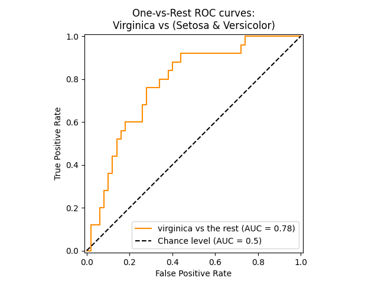
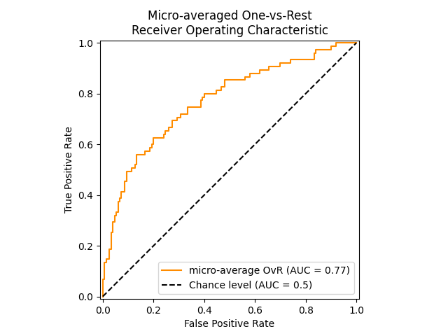

3.9. مقاييس الأداء وتقييمها: تقييم جودة التنبؤات كميًا#
هناك 3 واجهات برمجة تطبيقات (APIs) مختلفة لتقييم جودة تنبؤات النموذج:
طريقة تقييم الأداء للمُقدِّر: تحتوي المُقدِّرات على طريقة “score” التي توفر معيار تقييم افتراضي للمشكلة التي صُممت لحلها. لا يتم مناقشة هذا في هذه الصفحة، ولكن في وثائق كل مُقدِّر على حدة.
معيار التقييم: تعتمد أدوات تقييم النماذج التي تستخدم المصادقة المتقاطعة (مثل model_selection.cross_val_score و model_selection.GridSearchCV) على استراتيجية “تقييم” داخلية. يتم مناقشة هذا في قسم “معيار التقييم”.
دالات المقاييس: تنفذ وحدة sklearn.metrics دالات تقييم أخطاء التنبؤ لأغراض محددة. يتم تفصيل هذه المقاييس في الأقسام المتعلقة بمقاييس “التصنيف”، و”ترتيب التصنيف المتعدد التصنيفات”، و”الانحدار”، و”تصنيف التجميع”.
أخيرًا، تعد “المُقدِّرات الوهمية” مفيدة للحصول على قيمة مرجعية أساسية لهذه المقاييس بالنسبة للتنبؤات العشوائية.
See also
بالنسبة للمقاييس “المقارنة”، بين العينات وليس المُقدِّرات أو التنبؤات، راجع قسم “مقاييس الأداء”.
معيار التقييم: تحديد قواعد تقييم النماذج
اختيار وتقييم النموذج باستخدام أدوات مثل class:model_selection.GridSearchCV و func:model_selection.cross_val_score، تأخذ وسيطًا “scoring” الذي يتحكم في المقياس الذي تطبقه على المثمنات التي يتم تقييمها.
3.9.1. الحالات الشائعة: القيم المحددة مسبقًا#
بالنسبة لحالات الاستخدام الأكثر شيوعًا، يمكنك تعيين كائن مسجل درجات باستخدام وسيط “scoring”؛ يُظهر الجدول أدناه جميع القيم الممكنة. تتوافق جميع كائنات تسجيل النقاط مع الاتفاقية التي تفوق قيم الإرجاع الأعلى على القيم الأقل. وبالتالي، فإن المقاييس التي تقيس المسافة بين النموذج والبيانات، مثل func:metrics.mean_squared_error، متوفرة كـ neg_mean_squared_error والتي تعيد القيمة السالبة للمقياس.
أمثلة الاستخدام:
>>> from sklearn import svm, datasets
>>> from sklearn.model_selection import cross_val_score
>>> X, y = datasets.load_iris(return_X_y=True)
>>> clf = svm.SVC(random_state=0)
>>> cross_val_score(clf, X, y, cv=5, scoring='recall_macro')
array([0.96..., 0.96..., 0.96..., 0.93..., 1. ])
Note
إذا تم تمرير اسم تسجيل درجات غير صحيح، فسيتم إلقاء خطأ “InvalidParameterError”. يمكنك استرداد أسماء جميع المسجلين المتاحين عن طريق استدعاء :func: ~ sklearn.metrics.get_scorer_names.
3.9.2. تحديد استراتيجية تسجيل النقاط من وظائف القياس#
لا يتم تنفيذ وظائف القياس التالية كمسجلين مسمى،
في بعض الأحيان لأنها تتطلب معلمات إضافية، مثل
fbeta_score. لا يمكن تمريرها إلى وسيط “التسجيل”؛ بدلاً من ذلك، يجب تمرير دالة الاستدعاء الخاصة بها
make_scorer جنبًا إلى جنب مع قيمة المعلمات التي يمكن للمستخدم تعيينها.
تتمثل إحدى حالات الاستخدام النموذجية في لف وظيفة قياس موجودة في المكتبة بقيم غير افتراضية لمعلماتها، مثل معلمة “beta” لوظيفة “fbeta_score”:
>>> from sklearn.metrics import fbeta_score, make_scorer
>>> ftwo_scorer = make_scorer(fbeta_score, beta=2)
>>> from sklearn.model_selection import GridSearchCV
>>> from sklearn.svm import LinearSVC
>>> grid = GridSearchCV(LinearSVC(), param_grid={'C': [1, 10]},
... scoring=ftwo_scorer, cv=5)
تعرض الوحدة النمطية sklearn.metrics أيضًا مجموعة من الوظائف البسيطة
قياس خطأ التنبؤ بالنظر إلى الحقيقة الأرضية والتنبؤ:
الوظائف التي تنتهي بـ
_scoreتعيد قيمة قم بتعظيمها، كلما كان ذلك أفضل.الوظائف التي تنتهي بـ
_errorأو_lossأو_devianceتعيد قيمة للتقليل إلى الحد الأدنى، كلما انخفضت النتائج أفضل. عند التحويل إلى كائن مسجل باستخدامmake_scorer، قم بتعيين معلمة “greater_is_better” إلى “False” (“True” بشكل افتراضي؛ راجع
كائنات تسجيل النقاط المخصصة#
تتمثل حالة الاستخدام الثانية في بناء كائن تسجيل نقاط مخصص تمامًا
من دالة Python باستخدام make_scorer، والتي يمكنها
اتخاذ عدة معلمات:
دالة Python التي تريد استخدامها (
my_custom_loss_funcفي المثال أدناه)ما إذا كانت دالة Python تعيد درجة (
greater_is_better=True، الافتراضي) أو خسارة (greater_is_better=False). إذا كانت الخسارة، فسيتم إلغاء قيمة الدالة بواسطة
كائن مسجل، بما يتوافق مع اتفاقية التحقق من الصحة المتقاطعة التي تعيد المسجلات درجات أعلى للنماذج الأفضل.
للتصنيف المقاييس فقط: ما إذا كانت دالة Python التي قدمتها تتطلب احتمالات القرار المستمر. إذا كانت دالة التسجيل تقبل فقط تقديرات الاحتمال (على سبيل المثال: func:
metrics.log_loss) ثم تحتاج إلى تعيين معلمة
“response_method”، وبالتالي في هذه الحالة “response_method=”predict_proba”. لا تتطلب بعض وظائف التسجيل بالضرورة تقديرات الاحتمال ولكن قيم القرار غير المحددة
(على سبيل المثال: func:metrics.roc_auc_score). في هذه الحالة، يتم توفير قائمة مثل response_method=["decision_function"، "predict_proba"]. في هذه الحالة،
سيستخدم المسجل أول طريقة متاحة، بالترتيب المعطى في القائمة،
لحساب الدرجات.
أي معلمات إضافية، مثل “beta” أو “labels” في
f1_score.
فيما يلي مثال على بناء مسجلات مخصصة، وعلى استخدام معلمة “greater_is_better”:
>>> import numpy as np
>>> def my_custom_loss_func(y_true، y_pred):
... diff = np.abs(y_true - y_pred).max()
... return np.log1p(diff)
...
>>> # سيقوم المسجل بإلغاء قيمة الإرجاع لـ my_custom_loss_func،
>>> # والتي ستكون np.log(2)، 0.693، نظرًا لقيم X
>>> # و y المحددة أدناه.
>>> score = make_scorer(my_custom_loss_func, greater_is_better=False)
>>> X = [[1], [1]]
>>> y = [0, 1]
>>> from sklearn.dummy import DummyClassifier
>>> clf = DummyClassifier(strategy='most_frequent', random_state=0)
>>> clf = clf.fit(X, y)
>>> my_custom_loss_func(y, clf.predict(X))
0.69...
>>> score(clf, X, y)
-0.69...
3.9.3. تنفيذ كائن تسجيل النقاط الخاص بك#
يمكنك إنشاء مسجلات نماذج أكثر مرونة من خلال إنشاء كائن تسجيل النقاط الخاص بك من الصفر، دون استخدام make_scorer factory.
كيفية بناء مسجل من الصفر#
لكي تكون الدالة القابلة للاستدعاء مسجل درجات، يجب أن تلتزم بالبروتوكول المحدد بواسطة القاعدتين التاليتين:
يمكن استدعاؤه باستخدام معلمات “(estimator, X, y)”، حيث “estimator” هو النموذج الذي يجب تقييمه، “X” هي بيانات التحقق، و “y” هي الحقيقة الأرضية المستهدفة لـ “X” (في الحالة الخاضعة للإشراف) أو “None” (في حالة عدم الإشراف).
إنه يعيد رقمًا عشريًا يحدد كمية “دقة” تنبؤ “المقدر” على “X”، مع الإشارة إلى “y”. مرة أخرى، وفقًا للاتفاقية، تكون الأرقام الأعلى أفضل، لذا إذا أعاد مسجل النقاط الخاص بك الخسارة، يجب إلغاء قيمة تلك الخسارة.
متقدم: إذا كان يتطلب بيانات وصفية إضافية ليتم تمريرها إليه، فيجب أن يعرض طريقة “get_metadata_routing” التي تعيد البيانات الوصفية المطلوبة. يجب أن يكون المستخدم قادرًا على تعيين البيانات الوصفية المطلوبة عبر طريقة “set_score_request”. يرجى الاطلاع على: الدليل المرجعي للمستخدم <metadata_routing> و: الدليل المرجعي للمطور <sphx_glr_auto_examples_miscellaneous_plot_metadata_routing.py> لمزيد من التفاصيل.
Note
استخدام مسجلات مخصصة في الوظائف حيث n_jobs > 1
في حين أن تعريف وظيفة تسجيل النقاط المخصصة بجانب وظيفة الاستدعاء يجب أن تعمل خارج الصندوق مع الخلفية الافتراضية لـ joblib (loky)، سيكون استيرادها من وحدة أخرى نهجًا أكثر متانة ويعمل بشكل مستقل عن الخلفية joblib.
على سبيل المثال، لاستخدام “n_jobs” أكبر من 1 في المثال أدناه،
يتم حفظ وظيفة “custom_scoring_function” في وحدة أنشأها المستخدم
(custom_scorer_module.py) ويتم استيرادها:
>>> from custom_scorer_module import custom_scoring_function
>>> cross_val_score(model,
... X_train،
... y_train،
... scoring=make_scorer(custom_scoring_function، greater_is_better=False)،
... cv=5،
... n_jobs=-1)
استخدام تقييم المقياس المتعدد يسمح سكيت-ليرن أيضًا بتقييم مقاييس متعددة في “GridSearchCV” و “RandomizedSearchCV” و “cross_validate”.
هناك ثلاث طرق لتحديد مقاييس تقييم متعددة لمعلمة “التقييم”:
كقائمة قابلة للتكرار من المقاييس النصية:
>>> scoring = ['accuracy', 'precision']
كـ “dict” يقوم بتعيين اسم المقيم إلى دالة التقييم:
>>> from sklearn.metrics import accuracy_score >>> from sklearn.metrics import make_scorer >>> scoring = {'accuracy': make_scorer(accuracy_score), ... 'prec': 'precision'} لاحظ أن قيم القاموس يمكن أن تكون إما دالات تقييم أو إحدى سلاسل المقاييس المحددة مسبقًا.
كدالة قابلة للاستدعاء تعيد قاموس النتائج:
>>> from sklearn.model_selection import cross_validate >>> from sklearn.metrics import confusion_matrix >>> # مجموعة بيانات ثنائية للتصنيف كمثال توضيحي >>> X, y = datasets.make_classification(n_classes=2, random_state=0) >>> svm = LinearSVC(random_state=0) >>> def confusion_matrix_scorer(clf, X, y): ... y_pred = clf.predict(X) ... cm = confusion_matrix(y, y_pred) ... return {'tn': cm[0, 0], 'fp': cm[0, 1], ... 'fn': cm[1, 0], 'tp': cm[1, 1]} >>> cv_results = cross_validate(svm, X, y, cv=5, ... scoring=confusion_matrix_scorer) >>> # الحصول على نتائج القيم الإيجابية الحقيقية لمجموعة الاختبار >>> print(cv_results['test_tp']) [10 9 8 7 8] >>> # الحصول على نتائج القيم السلبية لمجموعة الاختبار >>> print(cv_results['test_fn']) [0 1 2 3 2]
مقاييس التصنيف وينفذ نموذج sklearn.metrics العديد من دالات الخسارة، والنتيجة، والمرافق لقياس أداء التصنيف. وقد تتطلب بعض المقاييس تقديرات احتمالية للفئة الإيجابية، أو قيم الثقة، أو قيم القرارات الثنائية. تسمح معظم التطبيقات لكل عينة بتقديم مساهمة مرجحة في النتيجة الإجمالية، من خلال معلمة “sample_weight”.
وبعض هذه المقاييس مقيدة بحالات التصنيف الثنائية:
precision_recall_curve
roc_curve
class_likelihood_ratios
det_curve
بينما تعمل مقاييس أخرى أيضًا في حالة التصنيف المتعدد:
balanced_accuracy_score
cohen_kappa_score
confusion_matrix
hinge_loss
matthews_corrcoef
roc_auc_score
top_k_accuracy_score
كما تعمل بعض المقاييس في حالة التصنيف المتعدد بالعلامات:
accuracy_score
classification_report
f1_score
fbeta_score
hamming_loss
jaccard_score
log_loss
multilabel_confusion_matrix
precision_recall_fscore_support
precision_score
recall_score
roc_auc_score
zero_one_loss
d2_log_loss_score
وتعمل بعض المقاييس مع المشكلات الثنائية والمتعددة العلامات (ولكن ليس مع التصنيف المتعدد):
average_precision_score
في الأقسام الفرعية التالية، سنقوم بوصف كل من هذه الدالات، تسبقها بعض الملاحظات حول تعريف واجهة برمجة التطبيقات (API) والمقاييس الشائعة.
من التصنيف الثنائي إلى التصنيف المتعدد والمتعدد العلامات
تُعرَّف بعض المقاييس بشكل أساسي لمهمات التصنيف الثنائية (مثل f1_score، وroc_auc_score). وفي هذه الحالات، يتم بشكل افتراضي تقييم العلامة الإيجابية فقط، مع افتراض أن العلامة الإيجابية هي “1” بشكل افتراضي (على الرغم من أنه يمكن تكوين ذلك من خلال معلمة “pos_label”).
وعند تمديد مقياس ثنائي إلى مشكلات متعددة التصنيف أو متعددة العلامات، تتم معاملة البيانات على أنها مجموعة من المشكلات الثنائية، واحدة لكل فئة. ثم هناك عدد من الطرق لحساب المتوسط لمقاييس ثنائية عبر مجموعة من الفئات، وقد يكون كل منها مفيدًا في بعض السيناريوهات. وعند توفرها، يجب عليك الاختيار من بين هذه الطرق باستخدام معلمة “average”.
“macro”: يحسب ببساطة متوسط المقاييس الثنائية، مما يعطي وزنًا متساويًا لكل فئة. وفي المشكلات التي تكون فيها الفئات النادرة مهمة على الرغم من ذلك، قد يكون المتوسط الحسابي طريقة لتسليط الضوء على أدائها. من ناحية أخرى، غالبًا ما يكون الافتراض بأن جميع الفئات متساوية في الأهمية غير صحيح، بحيث يؤدي المتوسط الحسابي إلى المبالغة في التأكيد على الأداء المنخفض لفئة نادرة.
“weighted”: يراعي اختلال التوازن بين الفئات عن طريق حساب متوسط المقاييس الثنائية التي يتم فيها ترجيح نتيجة كل فئة بوجودها في عينة البيانات الفعلية.
“micro”: يعطي كل زوج من العينات-الفئات مساهمة متساوية في المقياس الإجمالي (باستثناء ما ينتج عن “sample_weight”. بدلاً من جمع المقياس لكل فئة، يقوم هذا الأسلوب بجمع الأرباح والمقسومات التي تشكل المقاييس لكل فئة لحساب حاصل قسمة إجمالي. وقد يكون المتوسط الحسابي مفضلًا في الإعدادات متعددة العلامات، بما في ذلك التصنيف متعدد الفئات حيث يجب تجاهل فئة الأغلبية.
“samples”: ينطبق فقط على المشكلات متعددة العلامات. ولا يحسب مقياسًا لكل فئة، ولكنه يحسب المقياس عبر الفئات الفعلية والمتوقعة لكل عينة في بيانات التقييم، ويعيد متوسطها المرجح بـ “sample_weight”.
يؤدي تحديد “average=None” إلى إعادة مصفوفة بالنتيجة لكل فئة.
وفي حين يتم توفير بيانات متعددة الفئات للمقياس، مثل أهداف ثنائية، كمصفوفة من علامات الفئات، يتم تحديد بيانات متعددة العلامات كمصفوفة مؤشرات، حيث تحتوي الخلية [i, j] على القيمة 1 إذا كانت العينة “i” تحتوي على العلامة “j” والقيمة 0 في غير ذلك.
دالة نتيجة الدقة
تحسب دالة accuracy_score دقة الدقة، إما كجزء (القيمة الافتراضية) أو كعدد (normalize=False) من التوقعات الصحيحة.
وفي التصنيف متعدد العلامات، تعيد الدالة دقة الجزء الفرعي. إذا تطابقت مجموعة التوقعات الصحيحة بالكامل لعينة ما مع مجموعة العلامات الصحيحة، فإن دقة الجزء الفرعي تساوي 1.0؛ وإلا فإنها تساوي 0.0.
إذا كان y_pred_i هو القيمة المتوقعة للقيمة الفعلية y_i، فإن جزء التوقعات الصحيحة على n_samples يتم تحديده على النحو التالي:
حيث 1(x) هي دالة المؤشر.
في حالة التصنيف متعدد العلامات مع مؤشرات العلامات الثنائية:
أمثلة
راجع:ref:
sphx_glr_auto_examples_model_selection_plot_permutation_tests_for_classification.py<sphx_glr_auto_examples_model_selection_plot_permutation_tests_for_classification.py>للحصول على مثال على استخدام نتيجة الدقة باستخدام ترتيبات البيانات.
نتيجة دقة أعلى k
دالة top_k_accuracy_score هي تعميم لدالة accuracy_score. والفرق هو أنه يتم اعتبار التنبؤ صحيحًا طالما أن العلامة الصحيحة مرتبطة بواحدة من أعلى k نتائج متوقعة. ودالة accuracy_score هي حالة خاصة من k = 1.
وتغطي الدالة حالات التصنيف الثنائي والمتعدد الفئات ولكن ليس حالة التصنيف متعدد العلامات.
إذا كان y_pred_i,j هو الفئة المتوقعة للقيمة الفعلية y_i التي تتوافق مع أكبر نتيجة متوقعة j، فإن جزء التوقعات الصحيحة على n_samples يتم تحديده على النحو التالي:
حيث k هو عدد التخمينات المسموح بها و1(x) هي دالة المؤشر.
دالة نتيجة الدقة المتوازنة
تحسب دالة balanced_accuracy_score دقة الدقة المتوازنة، والتي تتجنب تقديرات الأداء المتضخمة في مجموعات البيانات غير المتوازنة. وهي المتوسط الحسابي لنتائج الاسترجاع لكل فئة أو، بشكل مكافئ، الدقة الخام حيث يتم ترجيح كل عينة وفقًا للعكس انتشار لفئتها الحقيقية.
وبالتالي، بالنسبة لبيانات متوازنة، تكون النتيجة مساوية للدقة.
وفي حالة التصنيف الثنائي، تكون الدقة المتوازنة مساوية للمتوسط الحسابي لحساسية (معدل الإيجابيات الحقيقية) والخصوصية (معدل السلبيات الحقيقية)، أو المساحة تحت منحنى ROC مع تنبؤات ثنائية بدلاً من النتائج:
إذا كان أداء المصنف جيدًا بالتساوي في كلتا الفئتين، فإن هذا المصطلح يقل إلى الدقة التقليدية (أي عدد التوقعات الصحيحة مقسومًا على العدد الإجمالي للتوقعات).
وعلى النقيض من ذلك، إذا كانت الدقة التقليدية أعلى من الصدفة فقط لأن المصنف يستفيد من مجموعة اختبار غير متوازنة، فإن الدقة المتوازنة، كما هو مناسب، ستنخفض إلى 1/عدد الفئات.
وتتراوح النتيجة من 0 إلى 1، أو عند استخدام “adjusted=True”، يتم إعادة تحجيمها إلى النطاق 1/(1-عدد الفئات) إلى 1، شاملاً ذلك، مع تسجيل الأداء العشوائي 0.
إذا كانت y_i هي القيمة الحقيقية للعينة i، وكانت w_i هي وزن العينة المقابل، فإننا نقوم بتعديل وزن العينة إلى:
حيث 1(x) هي دالة المؤشر.
وبالنظر إلى القيمة المتوقعة y_pred_i للعينة i، فإن الدقة المتوازنة يتم تحديدها على النحو التالي:
مع “adjusted=True”، تقوم الدقة المتوازنة بالإبلاغ عن الزيادة النسبية من الدقة المتوازنة (y, 0, w) = 1/عدد الفئات. وفي حالة التصنيف الثنائي، يُعرف هذا أيضًا باسم إحصائية J لYouden أو informedness.
ملاحظة
يبدو التعريف متعدد الفئات هنا أكثر التمديدات المعقولة للمقياس المستخدم في التصنيف الثنائي، على الرغم من عدم وجود توافق مؤكد في الآراء في الأدبيات:
تعريفنا: [Mosley2013]، و[Kelleher2015]_، و[Guyon2015]_، حيث يعتمد [Guyon2015] الإصدار المعدل لضمان أن التوقعات العشوائية لديها نتيجة 0 والتوقعات المثالية لديها نتيجة 1.
دقة الفئة المتوازنة كما هو موصوف في [Mosley2013]: يتم حساب الحد الأدنى بين الدقة والاسترجاع لكل فئة. ثم يتم حساب متوسط هذه القيم على العدد الإجمالي للفئات للحصول على الدقة المتوازنة.
الدقة المتوازنة كما هو موصوف في [Urbanowicz2015]: يتم حساب متوسط الحساسية والخصوصية لكل فئة ثم حساب متوسطها على العدد الإجمالي للفئات.
المراجع
Cohen’s kappa
تقوم دالة cohen_kappa_score بحساب إحصائية Cohen’s kappa. ويقصد بهذا المقياس مقارنة التصنيفات التي يقوم بها بشر مختلفون، وليس مصنفًا مقابل حقيقة أرضية.
ونتيجة kappa هي رقم بين -1 و1. وتعد النتائج أعلى 0.8 جيدة بشكل عام؛ وتشير النتيجة الصفرية أو الأقل إلى عدم وجود اتفاق (علامات عشوائية عمليًا).
ويمكن حساب نتائج kappa لمشكلات ثنائية أو متعددة الفئات، ولكن ليس لمشكلات متعددة العلامات (باستثناء حساب النتيجة لكل علامة يدويًا) وليس لأكثر من اثنين من المُصنِّفين.
مصفوفة الارتباك
وظيفة confusion_matrix تقيم دقة التصنيف عن طريق حساب مصفوفة الارتباك مع كل صف مطابق للفئة الحقيقية (قد تستخدم ويكيبيديا ومرجع آخر اتفاقية مختلفة للمحاور).
بحسب التعريف، فإن الإدخال \(i, j\) في مصفوفة الارتباك هو عدد الملاحظات الموجودة بالفعل في المجموعة \(i\)، ولكن تم التنبؤ بها في المجموعة \(j\). إليك مثال:
>>> from sklearn.metrics import confusion_matrix
>>> y_true = [2, 0, 2, 2, 0, 1]
>>> y_pred = [0, 0, 2, 2, 0, 2]
>>> confusion_matrix(y_true, y_pred)
array([[2, 0, 0],
[0, 0, 1],
[1, 0, 2]])
يمكن استخدام ConfusionMatrixDisplay لتمثيل مصفوفة الارتباك بصريًا كما هو موضح في مثال: ref:sphx_glr_auto_examples_model_selection_plot_confusion_matrix.py، والذي ينشئ الشكل التالي:
يسمح معامل normalize بالإبلاغ عن النسب بدلاً من العد. يمكن تطبيع مصفوفة الارتباك بثلاث طرق مختلفة: 'pred'، و 'true'، و 'all' والتي ستقسم العد على مجموع كل الأعمدة، أو الصفوف، أو المصفوفة بأكملها، على التوالي.
>>> y_true = [0, 0, 0, 1, 1, 1, 1, 1]
>>> y_pred = [0, 1, 0, 1, 0, 1, 0, 1]
>>> confusion_matrix(y_true, y_pred, normalize='all')
array([[0.25 , 0.125],
[0.25 , 0.375]])
بالنسبة للمشكلات الثنائية، يمكننا الحصول على عدد السلبيات الحقيقية، والإيجابيات الخاطئة، والسلبيات الخاطئة، والإيجابيات الحقيقية كما يلي:
>>> y_true = [0, 0, 0, 1, 1, 1, 1, 1]
>>> y_pred = [0, 1, 0, 1, 0, 1, 0, 1]
>>> tn, fp, fn, tp = confusion_matrix(y_true, y_pred).ravel()
>>> tn, fp, fn, tp
(2, 1, 2, 3)
الأمثلة
راجع Confusion matrix لمثال على استخدام مصفوفة الارتباك لتقييم جودة إخراج المصنف.
راجع Recognizing hand-written digits لمثال على استخدام مصفوفة الارتباك لتصنيف الأرقام المكتوبة بخط اليد.
راجع Classification of text documents using sparse features لمثال على استخدام مصفوفة الارتباك لتصنيف وثائق النص.
3.9.4. تقرير التصنيف#
تبني وظيفة classification_report تقرير نصي يُظهر مقاييس التصنيف الرئيسية. إليك مثال صغير مع أسماء مستهدفة مخصصة
وتصنيفات مستنتجة:
>>> from sklearn.metrics import classification_report
>>> y_true = [0, 1, 2, 2, 0]
>>> y_pred = [0, 0, 2, 1, 0]
>>> target_names = ['class 0', 'class 1', 'class 2']
>>> print(classification_report(y_true, y_pred, target_names=target_names))
precision recall f1-score support
class 0 0.67 1.00 0.80 2
class 1 0.00 0.00 0.00 1
class 2 1.00 0.50 0.67 2
accuracy 0.60 5
macro avg 0.56 0.50 0.49 5
weighted avg 0.67 0.60 0.59 5
الأمثلة
راجع Recognizing hand-written digits لمثال على استخدام تقرير التصنيف لل الأرقام المكتوبة بخط اليد.
راجع Custom refit strategy of a grid search with cross-validation لمثال على استخدام تقرير التصنيف لل البحث الشبكي مع التصديق المتقاطع المتداخل.
3.9.5. خسارة هامنج#
تقوم وظيفة hamming_loss بحساب متوسط خسارة هامنج أو مسافة هامنج بين مجموعتين
من العينات.
إذا كان \(\hat{y}_{i,j}\) هي القيمة المتوقعة للعلامة \(j\)-th لعينة معينة \(i\)، \(y_{i,j}\) هي القيمة الحقيقية المقابلة، \(n_\text{samples}\) هو عدد العينات و \(n_\text{labels}\) هو عدد العلامات، عندئذٍ يتم تعريف خسارة هامنج \(L_{Hamming}\) كما يلي:
حيث \(1(x)\) هي الدالة المؤشرة.
المعادلة أعلاه لا تصح في حالة التصنيف متعدد الفئات. يرجى الرجوع إلى الملاحظة أدناه لمزيد من المعلومات.
>>> from sklearn.metrics import hamming_loss
>>> y_pred = [1, 2, 3, 4]
>>> y_true = [2, 2, 3, 4]
>>> hamming_loss(y_true, y_pred)
0.25
في حالة التصنيف متعدد العلامات مع مؤشرات العلامات الثنائية:
>>> hamming_loss(np.array([[0, 1], [1, 1]]), np.zeros((2, 2)))
0.75
Note
في التصنيف متعدد الفئات، تتوافق خسارة هامنج مع مسافة هامنج بين
y_trueوy_predوالتي تشبه خسارة الصفر واحد function. ومع ذلك، في حين أن الخسارة الصفرية-واحدة تعاقب مجموعات التنبؤ التي لا تتطابق بشكل صارم مع المجموعات الحقيقية، فإن خسارة هامنج تعاقب العلامات الفردية. وهكذا، فإن خسارة هامنج، التي تكون محصورة من الأعلى بواسطة الخسارة الصفرية-واحدة، تكون دائمًا بين الصفر والواحد، بما في ذلك؛ والتنبؤ بمجموعة فرعية صحيحة
أو مجموعة فائقة من العلامات الحقيقية ستعطي خسارة هامنج بين الصفر والواحد، باستثناء.
الدقة، الاستدعاء، ومقاييس F بداهة، الدقة هي قدرة المصنف على عدم وسم عينة سلبية على أنها إيجابية، أما الاستدعاء فهو قدرة المصنف على إيجاد جميع العينات الإيجابية.
يمكن تفسير مقياس F (مقاييس F1 و F-beta) على أنه المتوسط الهارموني المرجح للدقة والاستدعاء. ويحصل مقياس F-beta على أفضل قيمة له عند 1 وأسوأ درجة له عند 0. عندما يكون بيتا = 1، يكون F-beta و F1 متكافئين، وتكون الدقة والاستدعاء متساويين في الأهمية.
تقوم دالة “precision_recall_curve” بحساب منحنى الدقة والاستدعاء من التصنيف الصحيح لعينة الاختبار ومن درجة معينة يمنحها المصنف، وذلك عن طريق تغيير عتبة القرار.
تقوم دالة “average_precision_score” بحساب المتوسط الدقيق (AP) من درجات التنبؤ. وتكون القيمة بين 0 و1، وكلما كانت أعلى كانت أفضل. يتم تعريف AP على النحو التالي:
AP = ∑(R_n - R_(n-1)) * P_n
حيث P_n و R_n هي الدقة والاستدعاء عند العتبة n. ومع التنبؤات العشوائية، يكون AP هو نسبة العينات الإيجابية.
تقدم المرجعان [Manning2008] و [Everingham2010] متغيرات بديلة لـ AP تُدخل منحنى الدقة والاستدعاء. حاليًا، لا تقوم دالة “average_precision_score” بتنفيذ أي متغير مُدخل. ويصف المرجعان [Davis2006] و [Flach2015] سبب كون الاستيفاء الخطي للنقاط على منحنى الدقة والاستدعاء مقياسًا متفائلاً بشكل مفرط لأداء المصنف. ويُستخدم هذا الاستيفاء الخطي عند حساب المساحة تحت المنحنى باستخدام قاعدة الترトラيد في دالة “auc”.
هناك عدة دوال تسمح لك بتحليل درجات الدقة والاستدعاء ومقاييس F:
autosummary:
average_precision_score
f1_score
fbeta_score
precision_recall_curve
precision_recall_fscore_support
precision_score
recall_score
لاحظ أن دالة “precision_recall_curve” مقيدة بالحالة الثنائية. وتدعم دالة “average_precision_score” التنسيقات متعددة التصنيفات والعلامات المتعددة بحساب درجة كل صنف بطريقة “واحد مقابل الباقي” (OvR) ومتوسطها أو عدم ذلك اعتمادًا على قيمة وسيط “average”.
تقوم الدالتان “PrecisionRecallDisplay.from_estimator” و “PrecisionRecallDisplay.from_predictions” برسم منحنى الدقة والاستدعاء على النحو التالي.
الصورة:
../auto_examples/model_selection/images/sphx_glr_plot_precision_recall_001.png
- target:
../auto_examples/model_selection/plot_precision_recall.html#plot-the-precision-recall-curve
- scale:
75
- align:
center
الأمثلة
انظر إلى: ref:sphx_glr_auto_examples_model_selection_plot_grid_search_digits.py للحصول على مثال على استخدام “precision_score” و “recall_score” لتقدير المعلمات باستخدام البحث الشبكي مع التصديق المتقاطع المُعشش.
انظر إلى: ref:sphx_glr_auto_examples_model_selection_plot_precision_recall.py للحصول على مثال على استخدام “precision_recall_curve” لتقييم جودة إخراج المصنف.
المراجع
C.D. Manning, P. Raghavan, H. Schütze, Introduction to Information Retrieval, 2008.
Everingham, L. Van Gool, C.K.I. Williams, J. Winn, A. Zisserman, The Pascal Visual Object Classes (VOC) Challenge, IJCV 2010.
Davis, M. Goadrich, The Relationship Between Precision-Recall and ROC Curves, ICML 2006.
P.A. Flach, M. Kull, Precision-Recall-Gain Curves: PR Analysis Done Right, NIPS 2015.
التصنيف الثنائي
في مهمة التصنيف الثنائي، يشير المصطلحان “إيجابي” و”سلبي” إلى تنبؤ المصنف، ويشير المصطلحان “صحيح” و”خاطئ” إلى ما إذا كان هذا التنبؤ يتوافق مع الحكم الخارجي (يُعرف أحيانًا باسم “الملاحظة”). وبناءً على هذه التعريفات، يمكننا صياغة الجدول التالي:
في هذا السياق، يمكننا تعريف مفهومي الدقة والاستدعاء:
الدقة = tp / (tp + fp)
الاستدعاء = tp / (tp + fn)
(يُطلق على الاستدعاء أحيانًا اسم “الحساسية”)
F-measure هو المتوسط الهارموني المرجح للدقة والاستدعاء، مع وزن مساهمة الدقة في المتوسط بواسطة معامل ما:
F_beta = (1 + beta^2) * (الدقة * الاستدعاء) / ((beta^2 * الدقة) + الاستدعاء)
لتجنب القسمة على الصفر عندما تكون الدقة والاستدعاء صفرًا، يحسب Scikit-Learn مقياس F باستخدام الصيغة المكافئة التالية:
F_beta = ((1 + beta^2) * tp) / ((1 + beta^2) * tp + fp + beta^2 * fn)
لاحظ أن هذه الصيغة غير محددة أيضًا عندما لا توجد نتائج إيجابية صحيحة أو خاطئة إيجابية أو خاطئة سلبية. وبشكل افتراضي، يتم حساب F-1 لمجموعة من السلبيات الصحيحة الحصرية على أنها 0، ومع ذلك يمكن تغيير هذا السلوك باستخدام وسيط “zero_division”.
فيما يلي بعض الأمثلة الصغيرة في التصنيف الثنائي:
>>> from sklearn import metrics
>>> y_pred = [0, 1, 0, 0]
>>> y_true = [0, 1, 0, 1]
>>> metrics.precision_score(y_true, y_pred)
1.0
>>> metrics.recall_score(y_true, y_pred)
0.5
>>> metrics.f1_score(y_true, y_pred)
0.66...
>>> metrics.fbeta_score(y_true, y_pred, beta=0.5)
0.83...
>>> metrics.fbeta_score(y_true, y_pred, beta=1)
0.66...
>>> metrics.fbeta_score(y_true, y_pred, beta=2)
0.55...
>>> metrics.precision_recall_fscore_support(y_true, y_pred, beta=0.5)
(array([0.66..., 1. ]), array([1. , 0.5]), array([0.71..., 0.83...]), array([2, 2]))
>>> import numpy as np
>>> from sklearn.metrics import precision_recall_curve
>>> from sklearn.metrics import average_precision_score
>>> y_true = np.array([0, 0, 1, 1])
>>> y_scores = np.array([0.1, 0.4, 0.35, 0.8])
>>> precision, recall, threshold = precision_recall_curve(y_true, y_scores)
>>> precision
array([0.5 , 0.66..., 0.5 , 1. , 1. ])
>>> recall
array([1. , 1. , 0.5, 0.5, 0. ])
>>> threshold
array([0.1 , 0.35, 0.4 , 0.8 ])
>>> average_precision_score(y_true, y_scores)
0.83...
التصنيف متعدد التصنيفات والعلامات المتعددة
في مهمة التصنيف متعدد التصنيفات والعلامات المتعددة، يمكن تطبيق مفاهيم الدقة والاستدعاء ومقاييس F على كل علامة بشكل مستقل.
هناك عدة طرق لدمج النتائج عبر العلامات، محددة بوسيط “average” في دوال “average_precision_score” و “f1_score” و “fbeta_score” و “precision_recall_fscore_support” و “precision_score” و “recall_score”، كما هو موضح أعلاه <average>.
لاحظ السلوكيات التالية عند حساب المتوسط:
إذا تم تضمين جميع العلامات، فإن حساب المتوسط “micro” في إعداد متعدد التصنيفات سينتج عنه دقة واستدعاء ومقياس F متطابقة جميعها مع الدقة.
قد ينتج حساب المتوسط “weighted” مقياس F لا يقع بين الدقة والاستدعاء.
يتم حساب المتوسط “macro” لمقاييس F على أنه المتوسط الحسابي لمقاييس F لكل علامة/صنف، وليس المتوسط الهارموني للمتوسطات الحسابية للدقة والاستدعاء. ويمكن رؤية كلا الحسابين في الأدبيات ولكنهما غير متكافئين، راجع [OB2019] للتفاصيل.
ولتوضيح ذلك أكثر، ضع في اعتبارك الملاحظات التالية:
y هي مجموعة الأزواج (sample، label) الصحيحة
y_hat هي مجموعة الأزواج (sample، label) المتوقعة
L هي مجموعة العلامات
S هي مجموعة العينات
y_s هي المجموعة الفرعية لـ y التي تحتوي على العينة s، أي y_s := {(s’, l) in y | s’ = s}
y_l هي المجموعة الفرعية لـ y التي تحتوي على العلامة l
وبالمثل، y_hat_s و y_hat_l هما المجموعتان الفرعيتان لـ y_hat
P(A، B) := | A ∩ B | / |B| لمجموعتين A و B
R(A، B) := | A ∩ B | / |A| (تختلف الاتفاقيات حول التعامل مع A = ∅؛ يستخدم هذا التنفيذ R(A، B):=0، وبالمثل لـ P)
F_beta(A، B) := (1 + beta^2) * P(A، B) * R(A، B) / (beta^2 * P(A، B) + R(A، B))
ثم يتم تعريف المقاييس على النحو التالي: فيما يلي ترجمة لنص RST باللغة العربية مع اتباع التعليمات المذكورة:
>>> from sklearn import metrics
>>> y_true = [0, 1, 2, 0, 1, 2]
>>> y_pred = [0, 2, 1, 0, 0, 1]
>>> metrics.precision_score(y_true, y_pred, average='macro')
0.22...
>>> metrics.recall_score(y_true, y_pred, average='micro')
0.33...
>>> metrics.f1_score(y_true, y_pred, average='weighted')
0.26...
>>> metrics.fbeta_score(y_true, y_pred, average='macro', beta=0.5)
0.23...
>>> metrics.precision_recall_fscore_support(y_true, y_pred, beta=0.5, average=None)
(array([0.66..., 0. , 0. ]), array([1., 0., 0.]), array([0.71..., 0. , 0. ]), array([2, 2, 2]...))
بالنسبة للتصنيف متعدد الفئات مع “الصنف السلبي”، من الممكن استبعاد بعض التصنيفات:
>>> metrics.recall_score(y_true, y_pred, labels=[1, 2], average='micro')
... # استبعاد 0، لم يتم استدعاء أي تصنيف بشكل صحيح
0.0
وبالمثل، قد يتم أخذ التصنيفات غير الموجودة في عينة البيانات في الاعتبار عند حساب المتوسط الكلي.
>>> metrics.precision_score(y_true, y_pred, labels=[0, 1, 2, 3], average='macro')
0.166...
المراجع
معامل تشابه جاكارد
وظيفة jaccard_score تحسب متوسط ‘معاملات التشابه جكارد <https://en.wikipedia.org/wiki/Jaccard_index>`_، والتي يطلق عليها أيضًا مؤشر جكارد، بين أزواج مجموعات العلامات.
معامل تشابه جكارد مع مجموعة العلامات المرجعية الحقيقية \(y\) ومجموعة العلامات المتوقعة \(\hat{y}\)، يتم تعريفه على النحو التالي:
تطبق وظيفة jaccard_score (مثل precision_recall_fscore_support) بشكل أصلي على الأهداف الثنائية. من خلال حسابها على أساس مجموعة، يمكن توسيع نطاقها لتطبيقها على التصنيفات المتعددة والمتعددة الفئات من خلال استخدام “المتوسط” (انظر above).
في الحالة الثنائية:
>>> import numpy as np
>>> from sklearn.metrics import jaccard_score
>>> y_true = np.array([[0, 1, 1],
... [1, 1, 0]])
>>> y_pred = np.array([[1, 1, 1],
... [1, 0, 0]])
>>> jaccard_score(y_true[0], y_pred[0])
0.6666...
في حالة المقارنة ثنائية الأبعاد (على سبيل المثال، تشابه الصور):
>>> jaccard_score(y_true, y_pred, average="micro")
0.6
في حالة التصنيف المتعدد مع مؤشرات العلامات الثنائية:
>>> jaccard_score(y_true, y_pred, average='samples')
0.5833...
>>> jaccard_score(y_true, y_pred, average='macro')
0.6666...
>>> jaccard_ topscorer(y_true, y_pred, average=None)
array([0.5, 0.5, 1. ])
يتم تحويل مشكلات التصنيف المتعدد إلى الشكل الثنائي ومعاملتها مثل مشكلة التصنيف المتعدد المقابلة:
>>> y_pred = [0, 2, 1, 2]
>>> y_true = [0, 1, 2, 2]
>>> jaccard_score(y_true, y_pred, average=None)
array([1. , 0. , 0.33...])
>>> jaccard_score(y_true, y_pred, average='macro')
0.44...
>>> jaccard_score(y_true, y_pred, average='micro')
0.33...
3.9.6. خسارة المفصل#
تحسب وظيفة hinge_loss متوسط المسافة بين
النموذج والبيانات باستخدام
خسارة المفصل، وهو مقياس أحادي الجانب
لا يأخذ في الاعتبار سوى أخطاء التنبؤ. (تُستخدم خسارة المفصل في مصنفات الهامش الأقصى مثل آلات المتجهات الداعمة.)
إذا كانت العلامة الحقيقية \(y_i\) لمهمة تصنيف ثنائي مشفرة على النحو
\(y_i=\left\{-1, +1\right\}\) لكل عينة \(i\)؛ و \(w_i\)
هو القرار المتوقع المقابل (مصفوفة ذات شكل (n_samples،) كما
يتم إخراجه بواسطة طريقة decision_function)، عندئذٍ يتم تعريف خسارة المفصل على النحو التالي:
إذا كان هناك أكثر من علامتين، فإن hinge_loss تستخدم متغيرًا متعدد الفئات
بسبب كرامر وسينجر.
هنا هي
الورقة التي تصفها.
في هذه الحالة، القرار المتوقع هو مصفوفة ذات شكل (n_samples،
n_labels). إذا كانت \(w_{i, y_i}\) هي القرار المتوقع لعلامة حقيقية
\(y_i\) للعينة \(i\)-th؛ و
\(\hat{w}_{i, y_i} = \max\left\{w_{i, y_j}~|~y_j \ne y_i \right\}\)
هو الحد الأقصى
للقرارات المتوقعة لجميع العلامات الأخرى، عندئذٍ يتم تعريف خسارة المفصل متعدد الفئات
على النحو التالي:
فيما يلي مثال صغير يوضح استخدام وظيفة hinge_loss
مع مصنف SVM في مشكلة ذات فئتين:
>>> from sklearn import svm
>>> from sklearn.metrics import hinge_loss
>>> X = [[0], [1]]
>>> y = [-1, 1]
>>> est = svm.LinearSVC(random_state=0)
>>> est.fit(X, y)
LinearSVC(random_state=0)
>>> pred_decision = est.decision_function([[-2], [3], [0.5]])
>>> pred_decision
array([-2.18..., 2.36..., 0.09...])
>>> hinge_loss([-1, 1, 1], pred_decision)
0.3...
فيما يلي مثال يوضح استخدام وظيفة hinge_loss
مع مصنف SVM في مشكلة متعددة الفئات:
>>> X = np.array([[0], [1], [2], [3]])
>>> Y = np.array([0, 1, 2, 3])
>>> labels = np.array([0, 1, 2, 3])
>>> est = svm.LinearSVC()
>>> est.fit(X, Y)
LinearSVC()
>>> pred_decision = est.decision_function([[-1], [2], [3]])
>>> y_true = [0, 2, 3]
>>> hinge_loss(y_true, pred_decision, labels=labels)
0.56...
3.9.7. خسارة السجل#
خسارة السجل، والتي يطلق عليها أيضًا خسارة الانحدار اللوجستي أو
خسارة الانتروبيا المتقاطعة، يتم تعريفها على تقديرات الاحتمالية. يتم
استخدامه بشكل شائع في الانحدار اللوجستي (المتعدد الحدود) والشبكات العصبية، وكذلك
في بعض المتغيرات من التوقع الأقصى، ويمكن استخدامه لتقييم
نواتج الاحتمالية (predict_proba) لمصنف بدلاً من تنبؤاته المحددة.
بالنسبة للتصنيف الثنائي مع علامة حقيقية \(y \in \{0,1\}\) وتقدير احتمالية \(p = \operatorname{Pr}(y = 1)\)، تكون خسارة السجل لكل عينة هي الاحتمالية السالبة للاحتمالية للمصنف بالنظر إلى العلامة الحقيقية:
يتم توسيع هذا إلى حالة الفئات المتعددة على النحو التالي. دع العلامات الحقيقية لمجموعة من العينات يتم تشفيرها كمصفوفة مؤشر ثنائي 1-of-K \(Y\)، أي \(y_{i,k} = 1\) إذا كانت العينة \(i\) لها علامة \(k\) مأخوذة من مجموعة من \(K\) العلامات. دع \(P\) تكون مصفوفة من تقديرات الاحتمالية، مع \(p_{i,k} = \operatorname{Pr}(y_{i,k} = 1)\). عندئذٍ تكون خسارة السجل للمجموعة بأكملها هي
ولرؤية كيف يعمم هذا خسارة السجل الثنائية المعطاة أعلاه، لاحظ أنه في الحالة الثنائية، \(p_{i,0} = 1 - p_{i,1}\) و \(y_{i,0} = 1 - y_{i,1}\)، لذا فإن توسيع المبلغ الداخلي على \(y_{i,k} \in \{0,1\}\) يعطي خسارة السجل الثنائية.
تحسب وظيفة log_loss خسارة السجل بالنظر إلى قائمة من العلامات المرجعية
ومصفوفة احتمالية، كما هو موضح بواسطة طريقة “predict_proba” للمصنف.
>>> from sklearn.metrics import log_loss
>>> y_true = [0, 0, 1, 1]
>>> y_pred = [[.9, .1], [.8, .2], [.3, .7], [.01, .99]]
>>> log_loss(y_true, y_pred)
0.1738...
يشير “ [0.9، 0.1]” الأول في “y_pred” إلى احتمال 90% أن العينة الأولى لها علامة 0. خسارة السجل غير سالبة.
3.9.8. معامل ارتباط ماثيوز#
تحسب وظيفة matthews_corrcoef
معامل ارتباط ماثيوز (MCC)
لفئات ثنائية. اقتباسا من ويكيبيديا:
“يُستخدم معامل ارتباط ماثيوز في التعلم الآلي كمقياس لجودة التصنيفات الثنائية (ذات الفئتين). يأخذ في الاعتبار القيم الصحيحة والإيجابية والسلبية الكاذبة ويُنظر إليه عمومًا على أنه مقياس متوازن يمكن استخدامه حتى إذا كانت الفئات ذات أحجام مختلفة جدًا. MCC هو في جوهره معامل ارتباط القيمة بين -1 و +1. يمثل المعامل 1 تنبؤًا مثاليًا، 0 تنبؤًا عشوائيًا متوسطًا و -1 تنبؤًا عكسيًا. يُعرف الإحصائي أيضًا باسم معامل في.”
في الحالة الثنائية (ذات الفئتين)، \(tp\)، \(tn\)، \(fp\) و \(fn\) هي على التوالي عدد القيم الصحيحة الإيجابية، والقيم السلبية الصحيحة، والقيم الإيجابية الكاذبة والسلبيات الكاذبة، يتم تعريف MCC على النحو التالي:
في حالة الفئات المتعددة، يمكن تعريف معامل ارتباط ماثيوز `
<http://rk.kvl.dk/introduction/index.html>`_ من حيث
confusion_matrix \(C\) لـ \(K\) الفئات. لتبسيط
التعريف، ضع في اعتبارك المتغيرات المتوسطة التالية:
\(t_k=\sum_{i}^{K} C_{ik}\) عدد المرات التي تحدث فيها الفئة \(k\) بشكل حقيقي،
\(p_k=\sum_{i}^{K} C_{ki}\) عدد المرات التي تم التنبؤ فيها بالفئة \(k\)،
\(c=\sum_{k}^{K} C_{kk}\) العدد الإجمالي للعينات التي تم التنبؤ بها بشكل صحيح،
\(s=\sum_{i}^{K} \sum_{j}^{K} C_{ij}\) العدد الإجمالي للعينات.
عندئذٍ يتم تعريف MCC متعدد الفئات على النحو التالي:
عندما يكون هناك أكثر من علامتين، لن يتراوح نطاق قيمة MCC بعد الآن بين -1 و +1. بدلاً من ذلك، ستكون القيمة الدنيا في مكان ما بين -1 و0 اعتمادًا على عدد وتوزيع العلامات المرجعية الحقيقية. القيمة القصوى هي دائمًا +1. للحصول على معلومات إضافية، راجع [WikipediaMCC2021].
فيما يلي مثال صغير يوضح استخدام وظيفة matthews_corrcoef
:
>>> from sklearn.metrics import matthews_corrcoef
>>> y_true = [+1, +1, +1, -1]
>>> y_pred = [+1, -1, +1, +1]
>>> matthews_corrcoef(y_true, y_pred)
-0.33...
مصفوفة الارتباك متعددة التصنيفات
تقوم دالة :func: multilabel_confusion_matrix بحساب مصفوفة التباس متعددة التصنيفات خاصة بالصنف (افتراضيًا) أو خاصة بالعينة (عند samplewise=True) لتقييم دقة التصنيف. كما تعامل دالة multilabel_confusion_matrix البيانات متعددة التصنيفات كما لو كانت متعددة التصنيفات، حيث أن هذا التحول يُطبق بشكل شائع لتقييم مشكلات متعددة التصنيفات باستخدام مقاييس التصنيف الثنائي (مثل الدقة، والاستدعاء، وما إلى ذلك).
عند حساب مصفوفة التباس متعددة التصنيفات خاصة بالصنف \(C\)، يكون عدد السلبيات الحقيقية للصنف \(i\) هو \(C_{i,0,0}\)، والسلبيات الخاطئة هي \(C_{i,1,0}\)، والإيجابيات الحقيقية هي \(C_{i,1,1}\)، والإيجابيات الخاطئة هي \(C_{i,0,1}\).
هذا مثال يوضح استخدام دالة :func: multilabel_confusion_matrix مع مصفوفة مؤشر متعددة التصنيفات كمدخل:
>>> import numpy as np
>>> from sklearn.metrics import multilabel_confusion_matrix
>>> y_true = np.array([[1, 0, 1],
... [0, 1, 0]])
>>> y_pred = np.array([[1, 0, 0],
... [0, 1, 1]])
>>> multilabel_confusion_matrix(y_true, y_pred)
array([[[1, 0],
[0, 1]],
[[1, 0],
[0, 1]],
[[0, 1],
[1, 0]]])
أو يمكن إنشاء مصفوفة التباس لكل تسميات العينة:
>>> multilabel_confusion_matrix(y_true, y_pred, samplewise=True)
array([[[1, 0],
[1, 1]],
[[1, 1],
[0, 1]]])
هذا مثال يوضح استخدام دالة :func: multilabel_confusion_matrix مع مدخل متعدد التصنيفات:
>>> y_true = ["cat", "ant", "cat", "cat", "ant", "bird"]
>>> y_pred = ["ant", "ant", "cat", "cat", "ant", "cat"]
>>> multilabel_confusion_matrix(y_true, y_pred,
... labels=["ant", "bird", "cat"])
array([[[3, 1],
[0, 2]],
[[5, 0],
[1, 0]],
[[2, 1],
[1, 2]]])
فيما يلي بعض الأمثلة التي توضح استخدام دالة :func: multilabel_confusion_matrix لحساب الاستدعاء (أو الحساسية)، والخصوصية، ومعدل السقوط، ومعدل الإخفاق لكل صنف في مشكلة مع مصفوفة مؤشر متعددة التصنيفات كمدخل.
حساب الاستدعاء recall (المعروف أيضًا باسم معدل الإيجابيات الحقيقية أو الحساسية) لكل صنف:
>>> y_true = np.array([[0, 0, 1],
... [0, 1, 0],
... [1, 1, 0]])
>>> y_pred = np.array([[0, 1, 0],
... [0, 0, 1],
... [1, 1, 0]])
>>> mcm = multilabel_confusion_matrix(y_true, y_pred)
>>> tn = mcm[:, 0, 0]
>>> tp = mcm[:, 1, 1]
>>> fn = mcm[:, 1, 0]
>>> fp = mcm[:, 0, 1]
>>> tp / (tp + fn)
array([1. , 0.5, 0. ])
حساب الخصوصية specificity (المعروف أيضًا باسم معدل السلبيات الحقيقية) لكل صنف:
>>> tn / (tn + fp)
array([1. , 0. , 0.5])
حساب معدل السقوط fall out (المعروف أيضًا باسم معدل الإيجابيات الخاطئة) لكل صنف:
>>> fp / (fp + tn)
array([0. , 1. , 0.5])
حساب معدل الإخفاق miss rate (المعروف أيضًا باسم معدل السلبيات الخاطئة) لكل صنف:
>>> fn / (fn + tp)
array([0. , 0.5, 1. ])
Receiver operating characteristic (ROC)
حساب دالة roc_curve لمنحنى خاصية تشغيل المستقبل (ROC) أو منحنى ROC. ونقلاً عن ويكيبيديا:
“منحنى خاصية تشغيل المستقبل (ROC)، أو ببساطة منحنى ROC، هو رسم بياني يوضح أداء نظام تصنيف ثنائي بينما يتم تغيير عتبة التمييز. يتم إنشاؤه عن طريق رسم نسبة الإيجابيات الحقيقية من الإيجابيات (TPR = معدل الإيجابية الحقيقية) مقابل نسبة الإيجابيات الخاطئة من السلبيات (FPR = معدل الإيجابية الخاطئة)، عند إعدادات العتبة المختلفة. كما يُعرف TPR بالحساسية، وFPR هو واحد ناقص النوعية أو معدل السلبيات الحقيقية.”
تتطلب هذه الدالة القيمة الثنائية الصحيحة والدرجات المستهدفة، والتي يمكن أن تكون إما تقديرات احتمالية للفئة الإيجابية أو قيم الثقة أو القرارات الثنائية. فيما يلي مثال صغير على كيفية استخدام دالة roc_curve:
>>> import numpy as np
>>> from sklearn.metrics import roc_curve
>>> y = np.array([1, 1, 2, 2])
>>> scores = np.array([0.1, 0.4, 0.35, 0.8])
>>> fpr, tpr, thresholds = roc_curve(y, scores, pos_label=2)
>>> fpr
array([0. , 0. , 0.5, 0.5, 1. ])
>>> tpr
array([0. , 0.5, 0.5, 1. , 1. ])
>>> thresholds
array([ inf, 0.8 , 0.4 , 0.35, 0.1 ])
مقارنة بمقاييس مثل دقة المجموعة الفرعية أو فقدان هامينج أو نتيجة F1، لا تتطلب ROC تحسين عتبة لكل تسمية.
تقوم دالة roc_auc_score، والتي يشار إليها بـ ROC-AUC أو AUROC، بحساب المساحة تحت منحنى ROC. وبهذه الطريقة، يتم تلخيص معلومات المنحنى في رقم واحد.
يوضح الشكل التالي منحنى ROC ونتيجة ROC-AUC لمصنف يهدف إلى التمييز بين زهرة فيرجينيكا وباقي الأنواع في مجموعة بيانات Iris plants dataset:
للحصول على مزيد من المعلومات، راجع مقال ويكيبيديا حول AUC.
3.9.8.1. الحالة الثنائية#
في الحالة الثنائية، يمكنك إما توفير تقديرات الاحتمالية، باستخدام طريقة classifier.predict_proba()، أو قيم القرار غير المعرفة بعتبة التي تعطيها طريقة classifier.decision_function(). في حالة توفير تقديرات الاحتمالية، يجب توفير احتمال الفئة ذات التسمية “الأكبر”. يقابل التسمية “الأكبر” classifier.classes_[1] وبالتالي classifier.predict_proba(X)[:, 1]. لذلك، يكون معامل y_score من الحجم (n_samples،).
>>> from sklearn.datasets import load_breast_cancer
>>> from sklearn.linear_model import LogisticRegression
>>> from sklearn.metrics import roc_auc_score
>>> X, y = load_breast_cancer(return_X_y=True)
>>> clf = LogisticRegression(solver="liblinear").fit(X, y)
>>> clf.classes_
array([0, 1])
يمكننا استخدام تقديرات الاحتمالية المقابلة لـ clf.classes_[1].
>>> y_score = clf.predict_proba(X)[:, 1]
>>> roc_auc_score(y, y_score)
0.99...
وبخلاف ذلك، يمكننا استخدام قيم القرار غير المعرفة بعتبة
>>> roc_auc_score(y, clf.decision_function(X))
0.99...
3.9.8.2. حالة التصنيف متعدد الفئات#
يمكن أيضًا استخدام دالة roc_auc_score في التصنيف متعدد الفئات. يتم دعم إستراتيجيتي المتوسط حاليًا: تحسب خوارزمية واحد-مقابل-واحد متوسط درجات ROC AUC الزوجية، وتحسب خوارزمية واحد-مقابل-الباقي متوسط درجات ROC AUC لكل فئة مقابل جميع الفئات الأخرى. في كلتا الحالتين، يتم توفير التسميات المتوقعة في مصفوفة بالقيم من 0 إلى n_classes، وتتوافق الدرجات مع تقديرات الاحتمالية بأن عينة ما تنتمي إلى فئة معينة. تدعم خوارزميتا OvO وOvR الوزن بالتساوي (average='macro') ووفقًا للانتشار (average='weighted').
خوارزمية واحد-مقابل-واحد#
يحسب متوسط AUC لجميع المجموعات الزوجية الممكنة من الفئات. [HT2001] يعرف مقياس AUC متعدد الفئات المرجح بالتساوي على النحو التالي:
حيث \(c\) هو عدد الفئات و:math:text{AUC}(j | k) هو AUC مع الفئة \(j\) كفئة إيجابية والفئة \(k\) كفئة سلبية. بشكل عام، \(\text{AUC}(j | k) \neq \text{AUC}(k | j)\) في حالة الفئات المتعددة. يتم استخدام هذه الخوارزمية عن طريق تعيين وسيط multiclass إلى 'ovo' و``average`` إلى 'macro'.
يمكن تمديد مقياس AUC متعدد الفئات [HT2001] ليكون مرجحًا بالانتشار على النحو التالي:
حيث \(c\) هو عدد الفئات. يتم استخدام هذه الخوارزمية عن طريق تعيين وسيط multiclass إلى 'ovo' و``average`` إلى 'weighted'. يعيد خيار 'weighted' متوسطًا مرجحًا بالانتشار كما هو موضح في [FC2009].
خوارزمية واحد-مقابل-الباقي#
يحسب AUC لكل فئة مقابل الباقي [PD2000]. الخوارزمية متطابقة وظيفيًا مع حالة التصنيف متعدد التسميات. لتمكين هذه الخوارزمية، قم بتعيين وسيط multiclass إلى 'ovr'. بالإضافة إلى المتوسط “macro” [F2006] و”weighted” [F2001]، تدعم OvR المتوسط “micro”.
في التطبيقات التي لا يمكن فيها تحمل معدل إيجابية خاطئة مرتفع، يمكن استخدام وسيط max_fpr للدالة roc_auc_score لتلخيص منحنى ROC حتى الحد المعطى.
يوضح الشكل التالي منحنى ROC المتوسط-الميكرو ونتيجة ROC-AUC المقابلة لمصنف يهدف إلى التمييز بين الأنواع المختلفة في مجموعة بيانات Iris plants dataset:
3.9.8.3. حالة التصنيف متعدد التسميات#
في التصنيف متعدد التسميات، يتم تمديد دالة roc_auc_score عن طريق حساب المتوسط على التسميات كما هو موضح في above. في هذه الحالة، يجب توفير مصفوفة y_score من الشكل (n_samples، n_classes). لذلك، عند استخدام تقديرات الاحتمالية، يجب تحديد احتمال الفئة ذات التسمية “الأكبر” لكل مخرج.
>>> from sklearn.datasets import make_multilabel_classification
>>> from sklearn.multioutput import MultiOutputClassifier
>>> X, y = make_multilabel_classification(random_state=0)
>>> inner_clf = LogisticRegression(solver="liblinear", random_state=0)
>>> clf = MultiOutputClassifier(inner_clf).fit(X, y)
>>> y_score = np.transpose([y_pred[:, 1] for y_pred in clf.predict_proba(X)])
>>> roc_auc_score(y, y_score, average=None)
array([0.82..., 0.86..., 0.94..., 0.85... , 0.94...])
وقيم القرار لا تتطلب مثل هذا المعالجة.
>>> from sklearn.linear_model import RidgeClassifierCV
>>> clf = RidgeClassifierCV().fit(X, y)
>>> y_score = clf.decision_function(X)
>>> roc_auc_score(y, y_score, average=None)
array([0.81..., 0.84... , 0.93..., 0.87..., 0.94...])
الأمثلة
راجع Multiclass Receiver Operating Characteristic (ROC) لمثال على استخدام ROC لتقييم جودة مخرجات مصنف.
راجع Receiver Operating Characteristic (ROC) with cross validation لمثال على استخدام ROC لتقييم جودة مخرجات مصنف، باستخدام التحقق الصليبي.
راجع Species distribution modeling لمثال على استخدام ROC لوضع نموذج لتوزيع الأنواع.
المراجع
Hand, D.J. and Till, R.J., (2001). A simple generalisation of the area under the ROC curve for multiple class classification problems. Machine learning, 45(2), pp. 171-186.
Ferri, Cèsar & Hernandez-Orallo, Jose & Modroiu, R. (2009). An Experimental Comparison of Performance Measures for Classification. Pattern Recognition Letters. 30. 27-38.
Provost, F., Domingos, P. (2000). Well-trained PETs: Improving probability estimation trees (Section 6.2), CeDER Working Paper #IS-00-04, Stern School of Business, New York University.
Fawcett, T., 2006. An introduction to ROC analysis. Pattern Recognition Letters, 27(8), pp. 861-874.
Fawcett, T., 2001. Using rule sets to maximize ROC performance In Data Mining, 2001. Proceedings IEEE International Conference, pp. 131-138.
منحنى مبادلة خطأ الكشف (DET)
وظيفة det_curve تحسب منحنى مبادلة خطأ الكشف (DET) [WikipediaDET2017].
اقتباس من ويكيبيديا:
“مخطط مبادلة خطأ الكشف (DET) هو رسم بياني لمعدلات الخطأ لأنظمة التصنيف الثنائية، حيث يرسم معدل الرفض الخاطئ مقابل معدل القبول الخاطئ. يتم ضبط محور x ومحور y بشكل غير خطي بواسطة الانحرافات المعيارية العادية الخاصة بهما (أو ببساطة عن طريق التحول اللوغاريتمي)، مما يؤدي إلى منحنيات مبادلة أكثر خطية من منحنيات ROC، وتستخدم معظم مساحة الصورة لتسليط الضوء على الاختلافات المهمة في منطقة التشغيل الحرجة.”
منحنيات DET هي تنويع لمنحنيات خاصية التشغيل المستلم (ROC) حيث يتم رسم معدل السلبي الكاذب على المحور y بدلاً من معدل الإيجابي الحقيقي. عادة ما يتم رسم منحنيات DET على مقياس الانحراف المعياري الطبيعي عن طريق التحول بـ \(\phi^{-1}\) (مع \(\phi\) كونها دالة التوزيع التراكمي). توضح منحنيات الأداء الناتجة بوضوح مبادلة أنواع الأخطاء لخوارزميات التصنيف المعطاة. راجع [Martin1997] للحصول على أمثلة وتحفيز إضافي.
يقارن هذا الشكل بين منحنيات ROC وDET لمصنفين مثالين في نفس مهمة التصنيف:

الخصائص#
تشكل منحنيات DET منحنى خطي على مقياس الانحراف المعياري العادي إذا كانت درجات الكشف موزعة بشكل طبيعي (أو قريبة من التوزيع الطبيعي). وقد أظهر [Navratil2007] أن العكس ليس صحيحًا بالضرورة وأن التوزيعات العامة أكثر قدرة على إنتاج منحنيات DET الخطية.
ينشر تحويل مقياس الانحراف المعياري العادي النقاط بحيث يشغل مساحة أكبر نسبيًا من الرسم البياني. لذلك، قد يكون من الأسهل التمييز بين المنحنيات ذات أداء التصنيف المماثل في مخطط DET.
مع كون معدل السلبي الكاذب “معكوسًا” لمعدل الإيجابي الحقيقي، فإن نقطة الكمال لمنحنيات DET هي الأصل (على عكس الركن العلوي الأيسر لمنحنيات ROC).
التطبيقات والقيود#
يسهل فهم منحنيات DET وتسمح بالتقييم المرئي السريع لأداء المصنف. بالإضافة إلى ذلك، يمكن الرجوع إلى منحنيات DET لتحليل العتبة واختيار نقطة التشغيل. وهذا مفيد بشكل خاص إذا كانت مقارنة أنواع الأخطاء مطلوبة.
من ناحية أخرى، لا توفر منحنيات DET مقياسها كرقم واحد. لذلك، بالنسبة للتقييم التلقائي أو المقارنة مع مهام تصنيف أخرى، قد تكون المقاييس مثل المساحة تحت منحنى ROC أكثر ملاءمة.
أمثلة
راجع Detection error tradeoff (DET) curve لمقارنة مثال بين منحنيات خاصية التشغيل المستلم (ROC) ومنحنيات مبادلة خطأ الكشف (DET).
المراجع
مساهمو ويكيبيديا. مبادلة خطأ الكشف. ويكيبيديا، الموسوعة الحرة. 4 سبتمبر 2017، الساعة 23:33 بتوقيت غرينتش. متاح في: https://en.wikipedia.org/w/index.php?title=Detection_error_tradeoff&oldid=798982054. تم الوصول إليه في 19 فبراير 2018.
A. Martin, G. Doddington, T. Kamm, M. Ordowski، وM. Przybocki، منحنى DET في تقييم أداء مهمة الكشف، NIST 1997.
3.9.9. خسارة الصفر واحد#
تحسب دالة zero_one_loss مجموع أو متوسط خسارة التصنيف 0-1 (\(L_{0-1}\)) على \(n_{\text{samples}}\). بشكل افتراضي، تقوم الدالة بالمعايرة على العينة. للحصول على مجموع \(L_{0-1}\)، قم بتعيين “normalize” إلى “False”.
في التصنيف متعدد التصنيفات، تقوم دالة zero_one_loss بتصنيف المجموعة الفرعية على أنها
واحد إذا تطابقت تسمياتها بشكل صارم مع التوقعات، وصفر إذا حدثت أي أخطاء. بشكل افتراضي، تقوم الدالة بإرجاع النسبة المئوية للمجموعات الفرعية المتوقعة بشكل غير مثالي. للحصول على عدد هذه المجموعات الفرعية بدلاً من ذلك، قم بتعيين “normalize” إلى “False”.
إذا كان \(\hat{y}_i\) هي القيمة المتوقعة للعينة i و \(y_i\) هي القيمة الصحيحة المقابلة، يتم تعريف الخسارة 0-1 \(L_{0-1}\) على النحو التالي:
حيث \(1(x)\) هي الدالة المؤشر. يمكن أيضًا حساب الخسارة الصفرية الواحدة على النحو التالي: الخسارة الصفرية الواحدة = 1 - الدقة.
>>> from sklearn.metrics import zero_one_loss
>>> y_pred = [1, 2, 3, 4]
>>> y_true = [2, 2, 3, 4]
>>> zero_one_loss(y_true, y_pred)
0.25
>>> zero_one_loss(y_true, y_pred, normalize=False)
1.0
في حالة التصنيف متعدد التصنيفات مع مؤشرات التصنيف الثنائية، حيث تحتوي مجموعة التصنيفات الأولى [0,1] على خطأ:
>>> zero_one_loss(np.array([[0, 1], [1, 1]]), np.ones((2, 2)))
0.5
>>> zero_one_loss(np.array([[0, 1], [1, 1]]), np.ones((2, 2)), normalize=False)
1.0
أمثلة
راجع Recursive feature elimination with cross-validation لمثال على استخدام الخسارة الصفرية الواحدة لإجراء القضاء التراجعي على الميزات مع التصديق المتقاطع.
3.9.10. خسارة نتيجة برير#
تقوم دالة brier_score_loss بحساب
نتيجة برير
للطبقات الثنائية [Brier1950]. اقتباس من ويكيبيديا:
“نتيجة برير هي دالة تسجيل صحيحة تقيس دقة التوقعات الاحتمالية. تنطبق على المهام التي يجب أن تعين فيها التوقعات الاحتمالات لمجموعة من النتائج المتبادلة الحصرية.”
تعيد هذه الدالة متوسط مربع الخطأ للنتيجة الفعلية \(y \in \{0,1\}\) وتقدير الاحتمال المتوقع \(p = \operatorname{Pr}(y = 1)\) (predict_proba) كما هو موضح بواسطة:
تقع خسارة نتيجة برير أيضًا بين 0 و1 وكلما انخفضت القيمة (كان متوسط مربع الفرق أصغر)، زادت دقة التوقع.
فيما يلي مثال صغير على استخدام هذه الدالة:
>>> import numpy as np
>>> from sklearn.metrics import brier_score_loss
>>> y_true = np.array([0, 1, 1, 0])
>>> y_true_categorical = np.array(["spam"، "ham"، "ham"، "spam"])
>>> y_prob = np.array([0.1, 0.9, 0.8, 0.4])
>>> y_pred = np.array([0, 1, 1, 0])
>>> brier_score_loss(y_true, y_prob)
0.055
>>> brier_score_loss(y_true, 1 - y_prob, pos_label=0)
0.055
>>> brier_score_loss(y_true_categorical, y_prob, pos_label="ham")
0.055
>>> brier_score_loss(y_true, y_prob > 0.5)
0.0
يمكن استخدام نتيجة برير لتقييم مدى جودة معايرة المصنف. ومع ذلك، لا يعني انخفاض خسارة نتيجة برير دائمًا معايرة أفضل. ويرجع ذلك إلى أنه، بالقياس على تحليل الانحياز-التشتت لمتوسط مربع الخطأ، يمكن تحليل خسارة نتيجة برير إلى خسارة المعايرة وخسارة التنقيح [Bella2012]. يتم تعريف خسارة المعايرة على أنها متوسط مربع الانحراف عن الاحتمالات التجريبية المستمدة من ميل شرائح ROC. يمكن تعريف خسارة التنقيح على أنها الخسارة المثالية المتوقعة كما تم قياسها بواسطة المساحة تحت منحنى التكلفة المثالية. يمكن أن تتغير خسارة التنقيح بشكل مستقل عن خسارة المعايرة، وبالتالي فإن انخفاض خسارة نتيجة برير لا يعني دائمًا معايرة نموذج أفضل. “فقط عندما تبقى خسارة التنقيح كما هي، فإن انخفاض خسارة نتيجة برير يعني دائمًا معايرة أفضل” [Bella2012]، [Flach2008].
أمثلة
راجع Probability calibration of classifiers لمثال على استخدام خسارة نتيجة برير لمعايرة احتمالية المصنفات.
المراجع
G. Brier، التحقق من التوقعات المعبر عنها من حيث الاحتمالية، Monthly weather review 78.1 (1950)
Bella، Ferri، Hernández-Orallo، and Ramírez-Quintana “معايرة نماذج التعلم الآلي” في Khosrow-Pour، M. “التعلم الآلي: المفاهيم والمنهجيات والأدوات والتطبيقات.” هيرشي، بنسلفانيا: معلومات العلوم المرجعية (2012).
Flach، Peter، and Edson Matsubara. “On classification, ranking، and probability estimation.” Dagstuhl Seminar Proceedings. Schloss Dagstuhl-Leibniz-Zentrum fr Informatik (2008).
فيما يلي ترجمة لنص RST باللغة الإنجليزية إلى اللغة العربية، مع اتباع التعليمات المحددة:
تحسب دالة class_likelihood_ratios نسب الاحتمالية الإيجابية والسلبية \(LR_\pm\) للفئات الثنائية، والتي يمكن تفسيرها على أنها نسبة الاحتمالات بعد الاختبار إلى الاحتمالات قبل الاختبار كما هو موضح أدناه. ونتيجة لذلك، فإن هذا المقياس لا يتأثر بنسبة انتشار الفئة (عدد العينات في الفئة الإيجابية مقسوماً على العدد الإجمالي للعينات) ويمكن استقراؤه بين المجموعات السكانية بغض النظر عن أي اختلال محتمل في الفئة.
لذلك، تعد مقاييس \(LR_\pm\) مفيدة للغاية في الحالات التي تكون فيها البيانات المتاحة لتعلم وتقييم مصنف هي مجموعة دراسة ذات فئات متوازنة تقريبًا، مثل دراسة الحالات والشواهد، في حين أن التطبيق المستهدف، أي السكان عمومًا، لديه انتشار منخفض جدًا.
نسبة الاحتمالية الإيجابية \(LR_+\) هي احتمال أن يتنبأ المصنف بشكل صحيح بأن عينة ما تنتمي إلى الفئة الإيجابية مقسومة على احتمال التنبؤ بالفئة الإيجابية لعينة تنتمي إلى الفئة السلبية:
يشير الرمز هنا إلى التصنيف المتوقع (\(P\)) أو الفعلي (\(T\)) والرمز \(+\) و:math:- يشيران إلى الفئة الإيجابية والسلبية، على التوالي، على سبيل المثال:math:P+ يعني “إيجابي متوقع”.
وبالمثل، فإن نسبة الاحتمالية السلبية \(LR_-\) هي احتمال تصنيف عينة من الفئة الإيجابية على أنها تنتمي إلى الفئة السلبية مقسومة على احتمال التصنيف الصحيح لعينة من الفئة السلبية:
بالنسبة للمصنفات التي تزيد عن الصدفة، فإن \(LR_+\) أعلى من 1 كلما كان أفضل، في حين أن \(LR_\)- تتراوح من 0 إلى 1 و كلما انخفضت كانت أفضل. تشير قيم \(LR_\pm\approx 1\) إلى مستوى الصدفة.
لاحظ أن الاحتمالات تختلف عن العد، على سبيل المثال، \(\operatorname{PR}(P+|T+)\) لا يساوي عدد العد الإيجابي الصحيح “tp” (راجع صفحة ويكيبيديا للصيغ الفعلية).
أمثلة
التفسير عبر الانتشار المختلف#
يمكن تفسير نسب احتمالية الفئات من حيث نسبة الاحتمالات (قبل الاختبار وبعده):
ترتبط الاحتمالات بشكل عام بالاحتمالات عن طريق:
أو ما يعادلها
في مجموعة سكانية معينة، يتم إعطاء الاحتمالية السابقة بواسطة الانتشار. من خلال تحويل الاحتمالات إلى احتمالات، يمكن ترجمة نسب الاحتمالية إلى احتمال الانتماء الحقيقي إلى أي من الفئات قبل وبعد توقع المصنف:
الانحرافات الرياضية#
نسبة الاحتمالية الإيجابية غير محددة عندما \(fp = 0\)، والتي يمكن تفسيرها على أنها تحديد المصنف لحالات إيجابية بشكل مثالي. إذا كان \(fp = 0\) وإضافة إلى ذلك \(tp = 0\)، فإن هذا يؤدي إلى قسمة الصفر على الصفر. يحدث هذا، على سبيل المثال، عند استخدام مصنف غبي يتوقع دائمًا الفئة السلبية وبالتالي يتم فقدان تفسيره كمصنف مثالي.
نسبة الاحتمالية السلبية غير محددة عندما \(tn = 0\). هذا الانحراف غير صالح، لأن \(LR_- > 1\) من شأنه أن يشير إلى زيادة في احتمالية انتماء عينة إلى الفئة الإيجابية بعد تصنيفها على أنها سلبية، كما لو أن فعل التصنيف تسبب في الحالة الإيجابية. ويشمل ذلك حالة المصنف الغبي الذي يتوقع دائمًا الفئة الإيجابية (أي عندما \(tn=fn=0\)).
كلتا نسبتي احتمالية الفئة غير محددتين عندما \(tp=fn=0\)، مما يعني أنه لم تكن هناك عينات من الفئة الإيجابية موجودة في مجموعة الاختبار. يمكن أن يحدث هذا أيضًا عند التحقق من صحة البيانات غير المتوازنة للغاية.
في جميع الحالات السابقة، تثير دالة class_likelihood_ratios بشكل افتراضي رسالة تحذير مناسبة وتعيد القيمة nan لتجنب التلوث عند حساب المتوسط عبر طيات التحقق من صحة التداخل.
للحصول على توضيح عملي لدالة class_likelihood_ratios، راجع المثال أدناه.
المراجع#
Brenner, H., & Gefeller, O. (1997). Variation of sensitivity, specificity, likelihood ratios and predictive values with disease prevalence. Statistics in medicine, 16(9), 981-991.
3.9.11. درجة D² للتصنيف#
تحسب درجة D² نسبة الانحراف الموضح. إنها تعميم لـ R²، حيث يتم تعميم الخطأ المربعي واستبداله بانحراف التصنيف المحدد \(\text{dev}(y، \ hat {y})\) (على سبيل المثال، خسارة السجل). D² هي شكل من أشكال درجة المهارة. يتم حسابه على النحو التالي:
حيث \(y_ {\ text {null}}\) هو التنبؤ الأمثل لنموذج يعتمد فقط على المعترض (على سبيل المثال، نسبة الفئة لكل فئة في حالة خسارة السجل).
مثل R²، أفضل درجة ممكنة هي 1.0 ويمكن أن تكون سلبية (لأن يمكن أن يكون النموذج أسوأ بشكل تعسفي). من شأن نموذج ثابت يتوقع دائمًا \(y_ {\ text {null}}\)، بغض النظر عن ميزات الإدخال، أن يحصل على درجة D² تساوي 0.0.
درجة D2 لخسارة السجل#
تقوم دالة d2_log_loss_score بتنفيذ الحالة الخاصة
من D² بخسارة السجل، راجع خسارة السجل، أي:
فيما يلي بعض أمثلة الاستخدام لدالة d2_log_loss_score:
>>> from sklearn.metrics import d2_log_loss_score
>>> y_true = [1, 1, 2, 3]
>>> y_pred = [
… [0.5, 0.25, 0.25]، … [0.5، 0.25، 0.25]، … [0.5، 0.25، 0.25]، … [0.5، 0.25، 0.25]، … ] >>> d2_log_loss_score (y_true، y_pred) 0.0 >>> y_true = [1، 2، 3] >>> y_pred = [ … [0.98، 0.01، 0.01]، … [0.01، 0.98، 0.01]، … [0.01، 0.01، 0.98]، … ] >>> d2_log_loss_score (y_true، y_pred) 0.981… >>> y_true = [1، 2، 3] >>> y_pred = [ … [0.1، 0.6، 0.3]، … [0.1، 0.6، 0.3]، … [0.4، 0.5، 0.1]، … ] >>> d2_log_loss_score (y_true، y_pred) -0.552…
مقاييس الترتيب متعددة التصنيفات في التعلم متعدد التصنيفات، يمكن أن يكون لكل عينة أي عدد من العلامات الصحيحة المرتبطة بها. والهدف هو إعطاء درجات عالية وترتيب أفضل للعلامات الصحيحة.
3.9.12. خطأ التغطية#
تحسب دالة coverage_error متوسط عدد العلامات التي يجب تضمينها في التنبؤ النهائي بحيث يتم التنبؤ بجميع العلامات الصحيحة. وهذا مفيد إذا كنت تريد معرفة عدد العلامات الأعلى تصنيفًا التي يجب التنبؤ بها في المتوسط دون إغفال أي علامة صحيحة. وبالتالي، فإن أفضل قيمة لهذا المقياس هي متوسط عدد العلامات الصحيحة.
ملاحظة:
درجة تنفيذنا أعلى بواحد من تلك المذكورة في Tsoumakas et al.، 2010. وهذا يوسعها للتعامل مع الحالة المتدهورة التي يكون فيها للنسخة 0 علامات صحيحة.
رسميًا، بالنظر إلى مصفوفة المؤشرات الثنائية لعلامات الحقيقة الأرضية y ∈ {0, 1}n_samples × n_labels ومقياس مرتبط بكل علامة ^f ∈ R^n_samples × n_labels، يتم تعريف التغطية على النحو التالي:
التغطية (y، ^f) = 1 / n_samples ∑_ {i=0} ^ {n_samples - 1} max_ {j: y_ {ij} = 1} rank_ {ij}
مع rank_ {ij} = | {k: ^f_ {ik} ≥ ^f_ {ij}|}.
نظرًا لتعريف الترتيب، يتم كسر التعادل في “y_scores” عن طريق إعطاء الترتيب الأقصى الذي كان سيتم تعيينه لجميع القيم المتعادلة.
فيما يلي مثال صغير على استخدام هذه الدالة:
>>> استيراد numpy كما np
>>> من sklearn.metrics استيراد coverage_error
>>> y_true = np.array ([[1،0،0]، [0،0،1]])
>>> y_score = np.array ([[0.75،0.5،1]، [1،0.2،0.1]])
>>> coverage_error (y_true، y_score)
2.5
3.9.13. متوسط دقة التصنيف بالعلامات#
تنفذ دالة label_ranking_average_precision_score متوسط دقة التصنيف بالعلامات (LRAP). يرتبط هذا المقياس بدالة average_precision_score، ولكنه يعتمد على مفهوم تصنيف العلامات بدلاً من الدقة والاستدعاء.
متوسط دقة التصنيف بالعلامات (LRAP) يحسب متوسط الإجابة على السؤال التالي عبر العينات: بالنسبة لكل علامة صحيحة، ما هي النسبة من العلامات الأعلى مرتبة التي كانت صحيحة؟ سيكون مقياس الأداء هذا أعلى إذا تمكنت من إعطاء ترتيب أفضل للعلامات المرتبطة بكل عينة. النتيجة التي يتم الحصول عليها أكبر دائمًا بشكل صارم من 0، وأفضل قيمة هي 1. إذا كان هناك علامة واحدة ذات صلة لكل عينة، فإن متوسط دقة التصنيف بالعلامات يعادل متوسط الرتبة المتبادلة <https://en.wikipedia.org/wiki/Mean_reciprocal_rank>.
رسميًا، بالنظر إلى مصفوفة المؤشرات الثنائية لعلامات الحقيقة الأرضية y ∈ {0, 1}n_samples × n_labels ومقياس مرتبط بكل علامة ^f ∈ R^n_samples × n_labels، يتم تعريف متوسط الدقة على النحو التالي:
LRAP (y، ^f) = 1 / n_samples ∑_ {i=0} ^ {n_samples - 1} 1 / || y_i ||_0 ∑_ {j: y_ {ij} = 1} | mathcal {L} _ {ij}| / rank_ {ij}
حيث mathcal {L} _ {ij} = {k: y_ {ik} = 1، ^f_ {ik} ≥ ^f_ {ij}|، rank_ {ij} = | {k: ^f_ {ik} ≥ ^f_ {ij}|، | · | يحسب عدد عناصر المجموعة (أي عدد العناصر في المجموعة)، و|| · ||_0 هو ||| l_0 ||| “norm” (الذي يحسب عدد العناصر غير الصفرية في متجه).
فيما يلي مثال صغير على استخدام هذه الدالة:
>>> استيراد numpy كما np
>>> من sklearn.metrics استيراد label_ranking_average_precision_score
>>> y_true = np.array ([[1،0،0]، [0،0،1]])
>>> y_score = np.array ([[0.75،0.5،1]، [1،0.2،0.1]])
>>> label_ranking_average_precision_score (y_true، y_score)
0.416…
3.9.14. خسارة الترتيب#
تحسب دالة label_ranking_loss خسارة الترتيب التي تحسب متوسط عدد أزواج العلامات التي يتم ترتيبها بشكل غير صحيح عبر العينات، أي أن العلامات الصحيحة لها درجة أقل من العلامات الخاطئة، مرجحة بالعكس عدد أزواج الترتيب من العلامات الخاطئة والصحيحة. أقل خسارة ترتيب يمكن تحقيقها هي الصفر.
رسميًا، بالنظر إلى مصفوفة المؤشرات الثنائية لعلامات الحقيقة الأرضية y ∈ {0, 1}n_samples × n_labels ومقياس مرتبط بكل علامة ^f ∈ R^n_samples × n_labels، يتم تعريف خسارة الترتيب على النحو التالي:
خسارة الترتيب (y، ^f) = 1 / n_samples ∑_ {i=0} ^ {n_samples - 1} 1 / || y_i ||_0 (n_labels - || y_i ||_0) | { (k، l): ^f_ {ik} ≤ ^f_ {il}، y_ {ik} = 1، y_ {il} = 0|
حيث | · | يحسب عدد عناصر المجموعة (أي عدد العناصر في المجموعة)، و|| · ||_0 هو ||| l_0 ||| “norm” (الذي يحسب عدد العناصر غير الصفرية في متجه).
فيما يلي مثال صغير على استخدام هذه الدالة:
>>> استيراد numpy كما np
>>> من sklearn.metrics استيراد label_ranking_loss
>>> y_true = np.array ([[1،0،0]، [0،0،1]])
>>> y_score = np.array ([[0.75،0.5،1]، [1،0.2،0.1]])
>>> label_ranking_loss (y_true، y_score)
0.75… >>> # مع التنبؤ التالي، يكون لدينا خسارة مثالية ودنيا >>> y_score = np.array ([[1.0،0.1،0.2]، [0.1،0.2،0.9]]) >>> label_ranking_loss (y_true، y_score) 0.0
مراجع
تسوماكاس، ج.، كاتاكيس، آي.، وفلاهافاس، آي. (2010). التنقيب عن البيانات متعددة التصنيفات. في دليل اكتشاف البيانات والتعدين (ص. 667-685). سبرينجر الولايات المتحدة الأمريكية.
3.9.15. المكسب التراكمي المخفض#
مكسب تراكمي مخفض (DCG) والمكسب التراكمي المخفض العادي (NDCG) هي مقاييس الترتيب التي يتم تنفيذها في sklearn.metrics.dcg_score و sklearn.metrics.ndcg_score؛ وهي تقارن الترتيب المتوقع بالدرجات الحقيقية، مثل ملاءمة الإجابات لاستعلام.
من صفحة ويكيبيديا لمكسب تراكمي مخفض:
“المكسب التراكمي المخفض (DCG) هو مقياس لجودة الترتيب. في استرجاع المعلومات، يتم استخدامه غالبًا لقياس فعالية خوارزميات محرك البحث أو التطبيقات ذات الصلة. باستخدام مقياس الملاءمة المتدرجة لوثائق مجموعة النتائج التي تم إرجاعها من استعلام محرك البحث، يقيس DCG فائدة المستند أو المكسب بناءً على موضعه في قائمة النتائج. يتم تراكم المكسب من أعلى إلى أسفل قائمة النتائج، مع خصم مكسب كل نتيجة لاحقة وفقًا للوضع في قائمة النتائج”
يقوم DCG بترتيب الأهداف الحقيقية (مثل ملاءمة إجابات الاستعلام) في الترتيب المتوقع، ثم يضربها في انخفاض لوغاريتمي ويجمع النتيجة. يمكن تقصير المجموع بعد النتائج الأولى K، وفي هذه الحالة نطلق عليه DCG@K.
NDCG، أو NDCG@K هو DCG مقسومًا على DCG الذي تم الحصول عليه من خلال التنبؤ المثالي، بحيث يكون دائمًا بين 0 و1. عادة ما يتم تفضيل NDCG على DCG.
مقارنة بخسارة الترتيب، يمكن أن يأخذ NDCG في الاعتبار درجات الملاءمة، بدلاً من الترتيب الحقيقي. لذا إذا كانت الحقيقة الأرضية تتكون فقط من ترتيب، فيجب تفضيل خسارة الترتيب؛ إذا كانت الحقيقة الأرضية تتكون من درجات الفائدة الفعلية (على سبيل المثال، 0 لعدم الملاءمة، 1 للملاءمة، 2 للملاءمة للغاية)، يمكن استخدام NDCG.
بالنسبة لعينة واحدة، بالنظر إلى متجه القيم الحقيقية المستمرة لكل هدف y ∈ RM، حيث M هو عدد الإخراج، والتنبؤ ^y، والذي يؤدي وظيفة الترتيب f، تكون نتيجة DCG هي
∑_ {r=1} ^ min (K، M) y_ {f (r)} / log (1 + r)
ونتيجة NDCG هي نتيجة DCG مقسومة على نتيجة DCG التي تم الحصول عليها لـ y.
مراجع
صفحة ويكيبيديا للمكسب التراكمي المخفض <https://en.wikipedia.org/wiki/Discounted_cumulative_gain>.
جارفيلين، ك.، وكيكالينين، ج. (2002). تقييم تقنيات استرجاع المعلومات المتراكمة. معاملات ACM على أنظمة المعلومات (TOIS)، 20 (4)، 422-446.
وانغ، واي، ووانغ، ل.، ولي، واي، وآخرون.، وهى، تى. (2013، مايو). تحليل نظري لتدابير NDCG. في وقائع المؤتمر السنوي السادس والعشرين حول نظرية التعلم (COLT 2013)
ماكشيري، ف.، ونجورك، م. (2008، مارس). حساب مقاييس أداء استرجاع المعلومات بكفاءة في وجود الدرجات المتعادلة. في المؤتمر الأوروبي حول استرجاع المعلومات (ص. 414-421). سبرينجر، برلين هايدلبرغ.
مقياس الانحدار يوفر نموذج sklearn.metrics العديد من دالات الخسارة، والنتيجة، والمنفعة لقياس أداء الانحدار. وقد تم تحسين بعضها للتعامل مع حالة الإخراج المتعدد: mean_squared_error، وmean_absolute_error، وr2_score، وexplained_variance_score، وmean_pinball_loss، وd2_pinball_score، وd2_absolute_error_score.
تملك هذه الدالات وسيطًا كلميًا multioutput يحدد طريقة حساب متوسط الدرجات أو الخسائر لكل هدف فردي. الافتراضي هو “uniform_average”، والذي يحدد متوسطًا موزونًا بشكل موحد عبر الإخراج. إذا تم تمرير مصفوفة ndarray ذات شكل (n_outputs,)، فسيتم تفسير إدخالاتها على أنها أوزان ويتم إرجاع المتوسط الموزون المقابل. إذا كان multioutput هو “raw_values”، فسيتم إرجاع جميع الدرجات أو الخسائر الفردية غير المعدلة في مصفوفة ذات شكل (n_outputs,).
تقبل دالتا r2_score وexplained_variance_score قيمة إضافية هي “variance_weighted” لمعامل multioutput. يؤدي هذا الخيار إلى وزن كل درجة فردية بواسطة انحراف متغير الهدف المقابل. يحدد هذا الإعداد الكمية الإجمالية للانحراف غير المحدد المقبوض. إذا كانت متغيرات الهدف ذات مقاييس مختلفة، فإن هذه الدرجة تمنح أهمية أكبر لشرح متغيرات الانحراف الأعلى.
R² score، معامل التحديد
تحسب دالة r2_score معامل التحديد، والذي يشار إليه عادةً بـ R².
يمثل نسبة التباين (من y) الذي تم شرحه بواسطة المتغيرات المستقلة في النموذج. فهو يوفر مؤشرًا على ملاءمة النموذج وبالتالي مقياسًا للكيفية التي من المحتمل أن يتم بها التنبؤ بالنماذج غير المرئية من خلال نسبة التباين الموضح.
نظرًا لأن هذا التباين يعتمد على مجموعة البيانات، فقد لا يكون R² قابلًا للمقارنة بشكل مفيد عبر مجموعات بيانات مختلفة. أفضل نتيجة ممكنة هي 1.0 ويمكن أن تكون سلبية (لأن النموذج يمكن أن يكون أسوأ بشكل تعسفي). سيحصل النموذج الثابت الذي يتوقع دائمًا القيمة المتوقعة (المتوسطة) لـ y، بغض النظر عن ميزات الإدخال، على نتيجة R² تساوي 0.0.
ملاحظة: عندما يكون متوسط بقايا التنبؤ صفرًا، تكون نتيجة R² وexplained_variance_score متطابقة.
إذا كان y_hat_i هو القيمة المتوقعة للعينة i وy_i هي القيمة الصحيحة المقابلة لما مجموعه n من العينات، فإن R² المقدرة معرفة على النحو التالي:
R²(y, y_hat) = 1 - (مجموع i=1 إلى n من (y_i - y_hat_i) تربيع) / (مجموع i=1 إلى n من (y_i - y_bar) تربيع)
حيث y_bar = 1/n * مجموع i=1 إلى n من y_i و مجموع i=1 إلى n من (y_i - y_hat_i) تربيع = مجموع i=1 إلى n من epsilon_i تربيع.
لاحظ أن دالة r2_score تحسب R² غير المعدل بدون تصحيح الانحياز في انحراف عينة y.
في الحالة الخاصة التي يكون فيها الهدف الحقيقي ثابتًا، لا يكون R² محدودًا: فهو إما NaN (تنبؤات مثالية) أو “-Inf” (تنبؤات غير مثالية). قد تمنع هذه الدرجات غير المحدودة تنفيذ تحسين النموذج بشكل صحيح، مثل الضبط الدقيق للتحقق من صحة التقاطع. لهذا السبب، فإن السلوك الافتراضي لـدالة r2_score هو استبدالها بـ 1.0 (تنبؤات مثالية) أو 0.0 (تنبؤات غير مثالية). إذا تم تعيين force_finite إلى False، فستعود هذه الدرجة إلى تعريف R² الأصلي.
فيما يلي مثال صغير على استخدام دالة r2_score:
>>> from sklearn.metrics import r2_score
>>> y_true = [3, -0.5, 2, 7]
>>> y_pred = [2.5, 0.0, 2, 8]
>>> r2_score(y_true, y_pred)
0.948...
>>> y_true = [[0.5, 1], [-1, 1], [7, -6]]
>>> y_pred = [[0, 2], [-1, 2], [8, -5]]
>>> r2_score(y_true, y_pred, multioutput='variance_weighted')
0.938...
>>> y_true = [[0.5, 1], [-1, 1], [7, -6]]
>>> y_pred = [[0, 2], [-1, 2], [8, -5]]
>>> r2_score(y_true, y_pred, multioutput='uniform_average')
0.936...
>>> r2_score(y_true, y_pred, multioutput='raw_values')
array([0.965..., 0.908...])
>>> r2_score(y_true, y_pred, multioutput=[0.3, 0.7])
0.925...
>>> y_true = [-2, -2, -2]
>>> y_pred = [-2, -2, -2]
>>> r2_score(y_true, y_pred)
1.0
>>> r2_score(y_true, y_pred, force_finite=False)
nan
>>> y_true = [-2, -2, -2]
>>> y_pred = [-2, -2, -2 + 1e-8]
>>> r2_score(y_true, y_pred)
0.0
>>> r2_score(y_true, y_pred, force_finite=False)
-inf
أمثلة:
راجع: ref:
sphx_glr_auto_examples_linear_model_plot_lasso_and_elasticnet.pyلمثال على استخدام نتيجة R² لتقييم Lasso وElastic Net على إشارات متفرقة.
متوسط الخطأ المطلق
تحسب دالة mean_absolute_error متوسط الخطأ المطلق، وهو مقياس للمخاطرة يقابل القيمة المتوقعة لقيمة الخطأ المطلق أو فقدان القيمة المطلقة.
إذا كان y_hat_i هو القيمة المتوقعة للعينة i، وy_i هي القيمة الصحيحة المقابلة، فإن متوسط الخطأ المطلق (MAE) المقدر على n_samples معرف على النحو التالي:
MAE(y, y_hat) = 1/n_samples * مجموع i=0 إلى n_samples-1 من | y_i - y_hat_i |.
فيما يلي مثال صغير على استخدام دالة mean_absolute_error:
>>> from sklearn.metrics import mean_absolute_error
>>> y_true = [3, -0.5, 2, 7]
>>> y_pred = [2.5, 0.0, 2, 8]
>>> mean_absolute_error(y_true, y_pred)
0.5
>>> y_true = [[0.5, 1], [-1, 1], [7, -6]]
>>> y_pred = [[0, 2], [-1, 2], [8, -5]]
>>> mean_absolute_error(y_true, y_pred)
0.75
>>> mean_absolute_error(y_true, y_pred, multioutput='raw_values')
array([0.5, 1. ])
>>> mean_absolute_error(y_true, y_pred, multioutput=[0.3, 0.7])
0.85...
متوسط الخطأ التربيعي
تحسب دالة mean_squared_error متوسط الخطأ التربيعي، وهو مقياس للمخاطرة يقابل القيمة المتوقعة لقيمة الخطأ التربيعي أو الخسارة.
إذا كان y_hat_i هو القيمة المتوقعة للعينة i، وy_i هي القيمة الصحيحة المقابلة، فإن متوسط الخطأ التربيعي (MSE) المقدر على n_samples معرف على النحو التالي:
MSE(y, y_hat) = 1/n_samples * مجموع i=0 إلى n_samples-1 من (y_i - y_hat_i) تربيع.
فيما يلي مثال صغير على استخدام دالة mean_squared_error:
>>> from sklearn.metrics import mean_squared_error
>>> y_true = [3, -0.5, 2, 7]
>>> y_pred = [2.5, 0.0, 2, 8]
>>> mean_squared_error(y_true, y_pred)
0.375
>>> y_true = [[0.5, 1], [-1, 1], [7, -6]]
>>> y_pred = [[0, 2], [-1, 2], [8, -5]]
>>> mean_squared_error(y_true, y_pred)
0.7083...
أمثلة:
راجع: ref:
sphx_glr_auto_examples_ensemble_plot_gradient_boosting_regression.pyلمثال على استخدام متوسط الخطأ التربيعي لتقييم الانحدار التدريجي.
إن أخذ الجذر التربيعي لـ MSE، والذي يُطلق عليه الخطأ التربيعي الجذري المتوسط (RMSE)، هو مقياس شائع آخر يوفر مقياسًا بوحدات متغير الهدف. يتوفر RSME من خلال دالة root_mean_squared_error.
متوسط الخطأ التربيعي اللوغاريتمي
تحسب دالة mean_squared_log_error مقياس مخاطرة يقابل القيمة المتوقعة لقيمة الخطأ التربيعي اللوغاريتمي (الربعي) أو الخسارة.
إذا كان y_hat_i هو القيمة المتوقعة للعينة i، وy_i هي القيمة الصحيحة المقابلة، فإن متوسط الخطأ التربيعي اللوغاريتمي (MSLE) المقدر على n_samples معرف على النحو التالي:
MSLE(y, y_hat) = 1/n_samples * مجموع i=0 إلى n_samples-1 من (لوغاريتم e (1 + y_i) - لوغاريتم e (1 + y_hat_i)) تربيع.
حيث لوغاريتم e (x) يعني اللوغاريتم الطبيعي لـ x. من الأفضل استخدام هذا المقياس عندما يكون للهدف نمو أسّي، مثل تعداد السكان، أو متوسط مبيعات سلعة ما على مدى سنوات، وما إلى ذلك. لاحظ أن هذا المقياس يعاقب التقدير الأقل من المتوقع أكثر من التقدير الأعلى من المتوقع.
فيما يلي مثال صغير على استخدام دالة mean_squared_log_error:
>>> from sklearn.metrics import mean_squared_log_error
>>> y_true = [3, 5, 2.5, 7]
>>> y_pred = [2.5, 5, 4, 8]
>>> mean_squared_log_error(y_true, y_pred)
0.039...
>>> y_true = [[0.5, 1], [1, 2], [7, 6]]
>>> y_pred = [[0.5, 2], [1, 2.5], [8, 8]]
>>> mean_squared_log_error(y_true, y_pred)
0.044...
يتوفر الجذر التربيعي المتوسط التربيعي اللوغاريتمي (RMSLE) من خلال دالة root_mean_squared_log_error.
متوسط الخطأ المئوي المطلق
متوسط الخطأ المئوي المطلق (MAPE)، المعروف أيضًا باسم متوسط الانحراف المئوي المطلق (MAPD)، هو مقياس تقييم لمشكلات الانحدار. فكرة هذا المقياس هي الحساسية للأخطاء النسبية. على سبيل المثال، لا يتغير بواسطة مقياس عالمي للمتغير الهدف.
إذا كان y_hat_i هو القيمة المتوقعة للعينة i وy_i هي القيمة الصحيحة المقابلة، فإن متوسط الخطأ المئوي المطلق (MAPE) المقدر على n_samples معرف على النحو التالي:
MAPE(y, y_hat) = 1/n_samples * مجموع i=0 إلى n_samples-1 من | y_i - y_hat_i | / max(epsilon, | y_i |)
حيث epsilon هو عدد صغير تعسفي ولكنه موجب بشكل صارم لتجنب النتائج غير المحددة عندما تكون y تساوي صفرًا.
تدعم دالة mean_absolute_percentage_error الإخراج المتعدد.
فيما يلي مثال صغير على استخدام دالة mean_absolute_percentage_error:
>>> from sklearn.metrics import mean_absolute_percentage_error
>>> y_true = [1, 10, 1e6]
>>> y_pred = [0.9, 15, 1.2e6]
>>> mean_absolute_percentage_error(y_true, y_pred)
0.2666...
في المثال أعلاه، إذا كنا قد استخدمنا “mean_absolute_error”، لتجاهلنا قيم الحجم الصغيرة وعكس الخطأ في التنبؤ بقيمة الحجم الأعلى فقط. ولكن يتم حل هذه المشكلة في حالة MAPE لأنه يحسب الخطأ النسبي المئوي فيما يتعلق بالإخراج الفعلي.
متوسط الخطأ المطلق
متوسط الخطأ المطلق مثير للاهتمام بشكل خاص لأنه مقاوم للقيم الشاذة. يتم حساب الخسارة عن طريق أخذ متوسط القيم المطلقة لجميع الاختلافات بين الهدف والتنبؤ.
إذا كان y_hat_i هو القيمة المتوقعة للعينة i وy_i هي القيمة الصحيحة المقابلة، فإن متوسط الخطأ المطلق (MedAE) المقدر على n_samples معرف على النحو التالي:
MedAE(y, y_hat) = الوسيط (| y_1 - y_hat_1 |، …، | y_n - y_hat_n |).
لا تدعم دالة median_absolute_error الإخراج المتعدد.
فيما يلي مثال صغير على استخدام دالة median_absolute_error:
>>> from sklearn.metrics import median_absolute_error
>>> y_true = [3, -0.5, 2, 7]
>>> y_pred = [2.5, 0.0, 2, 8]
>>> median_absolute_error(y_true, y_pred)
0.5
الخطأ الأقصى وظيفة :func: ‘max_error’ تحسب الحد الأقصى للخطأ المتبقي، وهو مقياس يلتقط خطأ أسوأ الحالات بين القيمة المتوقعة والقيمة الحقيقية. في نموذج الانحدار أحادي الإخراج المناسب تمامًا، ستكون القيمة “max_error” هي “0” على مجموعة التدريب وعلى الرغم من أن هذا من غير المرجح أن يحدث في العالم الحقيقي، إلا أن هذا المقياس يوضح مدى الخطأ الذي كان لدى النموذج عند تناسبه.
إذا كانت :math: ‘y_i^’ هي القيمة المتوقعة للعينة :math: ‘i’-th، و :math: ‘y_i’ هي القيمة الحقيقية المقابلة، إذن يتم تعريف الخطأ الأقصى على النحو التالي
هنا مثال صغير على استخدام وظيفة :func: ‘max_error’:
>>> from sklearn.metrics import max_error
>>> y_true = [3, 2, 7, 1]
>>> y_pred = [9, 2, 7, 1]
>>> max_error(y_true, y_pred)
6
وظيفة :func: ‘max_error’ لا تدعم الإخراج المتعدد.
3.9.16. درجة التباين الموضحة#
تحسب وظيفة :func: ‘explained_variance_score’ درجة تباين الانحدار الموضحة ‘ <https://en.wikipedia.org/wiki/Explained_variation>’.
إذا كان :math: ‘y^’ هو إخراج الهدف المقدر، و :math: ‘y’ إخراج الهدف المقابل (الصحيح)، و :math: ‘Var’ هو ‘ التباين <https://en.wikipedia.org/wiki/Variance>’، مربع الانحراف المعياري، يتم تقدير التباين الموضح على النحو التالي:
أفضل نتيجة ممكنة هي 1.0، والقيم الأقل هي الأسوأ.
في الحالة الخاصة التي يكون فيها الهدف الحقيقي ثابتًا، لا تكون درجة التباين الموضحة محدودة: إما “NaN” (تنبؤات مثالية) أو “-Inf” (تنبؤات غير مثالية). قد تمنع هذه الدرجات غير المحدودة إجراء تحسين النموذج الصحيح مثل الضبط الدقيق للتحقق من صحة الشبكة المتقاطعة. ولهذا السبب، السلوك الافتراضي لـ :func: ‘explained_variance_score’ هو استبدالها بـ 1.0 (تنبؤات مثالية) أو 0.0 (تنبؤات غير مثالية). يمكنك تعيين معلمة “force_finite” إلى “False” لمنع حدوث هذا الإصلاح والعودة إلى درجة التباين الموضحة الأصلية.
هنا مثال صغير على استخدام وظيفة :func: ‘explained_variance_score’:
>>> from sklearn.metrics import explained_variance_score
>>> y_true = [3, -0.5, 2, 7]
>>> y_pred = [2.5, 0.0, 2, 8]
>>> explained_variance_score(y_true, y_pred)
0.957...
>>> y_true = [[0.5, 1], [-1, 1], [7, -6]]
>>> y_pred = [[0, 2], [-1, 2], [8, -5]]
>>> explained_variance_score(y_true, y_pred, multioutput='raw_values')
array([0.967..., 1. ])
>>> explained_variance_score(y_true, y_pred, multioutput=[0.3, 0.7])
0.990...
>>> y_true = [-2, -2, -2]
>>> y_pred = [-2, -2, -2]
>>> explained_variance_score(y_true, y_pred)
1.0
>>> explained_variance_score(y_true, y_pred, force_finite=False)
nan
>>> y_true = [-2, -2, -2]
>>> y_pred = [-2, -2, -2 + 1e-8]
>>> explained_variance_score(y_true, y_pred)
0.0
>>> explained_variance_score(y_true, y_pred, force_finite=False)
-inf
3.9.17. متوسط انحرافات بويسون وغاما وتويد#
تقوم وظيفة :func: ‘mean_tweedie_deviance’ بحساب متوسط انحراف تويد ‘ <https://en.wikipedia.org/wiki/Tweedie_distribution#The_Tweedie_deviance>’ مع معلمة “power” (:math: ‘p’). هذا مقياس يستحث قيم التوقع المتوقعة لأهداف الانحدار.
توجد الحالات الخاصة التالية،
عندما “power=0” فهو مكافئ لـ :func: ‘mean_squared_error’.
عندما “power=1” فهو مكافئ لـ :func: ‘mean_poisson_deviance’.
عندما “power=2” فهو مكافئ لـ :func: ‘mean_gamma_deviance’.
إذا كان :math: ‘y_i^’ هو القيمة المتوقعة للعينة :math: ‘i’-th، و :math: ‘y_i’ هي القيمة الحقيقية المقابلة، إذن متوسط انحراف تويد (D) لقوة :math: ‘p’، المقدرة على :math: ‘n_samples’ يتم تعريفها على النحو التالي
انحراف تويد هو دالة متجانسة من الدرجة “2-power”. وهكذا، فإن توزيع غاما مع “power=2” يعني أن القياس المتزامن لـ “y_true” و “y_pred” ليس له تأثير على الانحراف. بالنسبة لتوزيع بويسون، “power=1” ينحرف الخطي، وبالنسبة للتوزيع الطبيعي ( “power=0”)، انحراف رباعي. بشكل عام، كلما زادت “power” قل وزن الانحرافات القصوى بين القيم الحقيقية والمتوقعة.
على سبيل المثال، دعنا نقارن تنبؤين 1.5 و150، وكلاهما أكبر بنسبة 50% من قيمتهما الحقيقية المقابلة.
الخطأ التربيعي المتوسط ( “power=0”) حساس جدًا لفرق التنبؤ بالنقطة الثانية،:
>>> from sklearn.metrics import mean_tweedie_deviance
>>> mean_tweedie_deviance([1.0], [1.5], power=0)
0.25
>>> mean_tweedie_deviance([100.], [150.], power=0)
2500.0
إذا قمنا بزيادة “power” إلى 1،:
>>> mean_tweedie_deviance([1.0], [1.5], power=1)
0.18...
>>> mean_tweedie_deviance([100.], [150.], power=1)
18.9...
ينخفض الفرق في الأخطاء. أخيرًا، عن طريق الضبط، “power=2”:
>>> mean_tweedie_deviance([1.0], [1.5], power=2)
0.14...
>>> mean_tweedie_deviance([100.], [150.], power=2)
0.14...
سنحصل على أخطاء متطابقة. الانحراف عندما “power=2” حساس فقط للأخطاء النسبية.
3.9.18. خسارة بينبول#
تُستخدم وظيفة :func: ‘mean_pinball_loss’ لتقييم الأداء التنبئي لنماذج الانحدار الكمي.
تكون قيمة خسارة بينبول مكافئة لنصف :func: ‘mean_absolute_error’ عندما يتم تعيين معلمة الكمية “alpha” على 0.5.
هنا مثال صغير على استخدام وظيفة :func: ‘mean_pinball_loss’:
>>> from sklearn.metrics import mean_pinball_loss
>>> y_true = [1, 2, 3]
>>> mean_pinball_loss(y_true, [0, 2, 3], alpha=0.1)
0.03...
>>> mean_pinball_loss(y_true, [1, 2, 4], alpha=0.1)
0.3...
>>> mean_pinball_loss(y_true, [0, 2, 3], alpha=0.9)
0.3...
>>> mean_pinball_loss(y_true, [1, 2, 4], alpha=0.9)
0.03...
>>> mean_pinball_loss(y_true, y_true, alpha=0.1)
0.0
>>> mean_pinball_loss(y_true, y_true, alpha=0.9)
0.0
من الممكن بناء كائن مسجل باختيار محدد لـ “alpha”:
>>> from sklearn.metrics import make_scorer
>>> mean_pinball_loss_95p = make_scorer(mean_pinball_loss, alpha=0.95)
يمكن استخدام مسجل كهذا لتقييم الأداء العام لنموذج الانحدار الكمي عبر التحقق من صحة الشبكة المتقاطعة:
>>> from sklearn.datasets import make_regression
>>> from sklearn.model_selection import cross_val_score
>>> from sklearn.ensemble import GradientBoostingRegressor
>>>
>>> X, y = make_regression(n_samples=100, random_state=0)
>>> estimator = GradientBoostingRegressor(
... loss="quantile",
... alpha=0.95,
... random_state=0,
... )
>>> cross_val_score(estimator, X, y, cv=5, scoring=mean_pinball_loss_95p)
array([13.6..., 9.7..., 23.3..., 9.5..., 10.4...])
من الممكن أيضًا بناء كائنات مسجلة لضبط دقة المعلمات. يجب تبديل علامة الخسارة لضمان أن “الأكبر أفضل” كما هو موضح في المثال المرتبط أدناه.
أمثلة
راجع :ref: ‘sphx_glr_auto_examples_ensemble_plot_gradient_boosting_quantile.py’ لمثال على استخدام خسارة بينبول لتقييم وضبط دقة معلمات نماذج الانحدار الكمي على بيانات ذات ضجيج غير متماثل ونقاط خارجة عن المنحنى.
3.9.19. درجة D²#
تحسب درجة D² كسر الانحراف الموضح. إنه تعميم لـ R²، حيث يتم تعميم الخطأ التربيعي واستبداله بواسطة انحراف اختيار :math: ‘dev (y، y^)’ (على سبيل المثال، تويد، بينبول أو متوسط الخطأ المطلق). D² هو شكل من أشكال نتيجة المهارة. يتم حسابه على النحو التالي
حيث :math: ‘y_null’ هو التنبؤ الأمثل لنموذج ذو معامل وحيد (على سبيل المثال، متوسط ‘y_true’ لحالة تويد، الوسيط للخطأ المطلق والكمية “alpha” للخسارة بينبول).
مثل R²، أفضل نتيجة ممكنة هي 1.0 ويمكن أن تكون سلبية (لأن يمكن أن يكون النموذج أسوأ بشكل تعسفي). من شأن نموذج ثابت يتوقع دائمًا :math: ‘y_null’، بغض النظر عن ميزات الإدخال، الحصول على درجة D² تساوي 0.0.
درجة D² تويد#
تقوم وظيفة :func: ‘d2_tweedie_score’ بتنفيذ الحالة الخاصة لـ D² حيث :math: ‘dev (y، y^)’ هو انحراف تويد، راجع :ref: ‘mean_tweedie_deviance’. يُعرف أيضًا باسم D² Tweedie ويرتبط بفهرس نسبة احتمال ماكفادن.
تحدد وسيطة “power” طاقة تويد كما هو الحال في
:func: ‘mean_tweedie_deviance’. لاحظ أنه بالنسبة لـ power=0،
:func: ‘d2_tweedie_score’ يساوي :func: ‘r2_score’ (لأهداف فردية).
يمكن بناء كائن مسجل باختيار محدد لـ “power” عن طريق:
>>> from sklearn.metrics import d2_tweedie_score، make_scorer
>>> d2_tweedie_score_15 = make_scorer(d2_tweedie_score، power=1.5)
درجة D² بينبول#
تقوم وظيفة :func: ‘d2_pinball_score’ بتنفيذ الحالة الخاصة من D² مع خسارة بينبول، راجع :ref: ‘pinball_loss’، أي:
تحدد وسيطة “alpha” منحدر خسارة بينبول كما هو الحال في :func: ‘mean_pinball_loss’ (:ref: ‘pinball_loss’). فهو يحدد مستوى الكمية “alpha” الذي يكون فيه كل من خسارة بينبول و D² الأمثل. لاحظ أنه بالنسبة لـ “alpha=0.5” (الافتراضي) :func: ‘d2_pinball_score’ يساوي :func: ‘d2_absolute_error_score’.
يمكن بناء كائن مسجل باختيار محدد لـ “alpha” عن طريق:
>>> from sklearn.metrics import d2_pinball_score، make_scorer
>>> d2_pinball_score_08 = make_scorer(d2_pinball_score، alpha=0.8)
درجة الخطأ المطلق D²#
تقوم وظيفة :func: ‘d2_absolute_error_score’ بتنفيذ الحالة الخاصة لـ :ref: ‘mean_absolute_error’:
فيما يلي بعض أمثلة الاستخدام لوظيفة :func: ‘d2_absolute_error_score’:
>>> from sklearn.metrics import d2_absolute_error_score
>>> y_true = [3, -0.5, 2, 7]
>>> y_pred = [2.5, 0.0, 2, 8]
>>> d2_absolute_error_score(y_true, y_pred)
0.764...
>>> y_true = [1, 2, 3]
>>> y_pred = [1, 2, 3]
>>> d2_absolute_error_score(y_true, y_pred)
1.0
>>> y_true = [1, 2, 3]
>>> y_pred
فيما يلي ترجمة لنص RST باللغة الإنجليزية إلى اللغة العربية مع اتباع التعليمات المحددة:
من بين طرق تقييم جودة نماذج الانحدار، يوفر scikit-learn فئة
PredictionErrorDisplay. تسمح هذه الفئة بالتفتيش البصري على أخطاء التنبؤ لنموذج بطريقتين مختلفتين.
توضح الصورة على اليسار القيم الفعلية مقابل القيم المتوقعة. بالنسبة لمهمة انحدار خالية من الضوضاء تهدف إلى التنبؤ بالتوقع الشرطي لـ “y”، سيعرض نموذج الانحدار المثالي نقاط البيانات على القطر المحدد بواسطة القيم المتوقعة تساوي القيم الفعلية. وكلما ابتعدنا عن هذا الخط الأمثل، زاد خطأ النموذج. في إعداد أكثر واقعية مع ضوضاء غير قابلة للاختزال، أي عندما لا يمكن تفسير جميع تغيرات “y” بواسطة الميزات في “X”، فإن أفضل نموذج سيؤدي إلى سحابة من النقاط المتراصة حول القطر.
تجدر الإشارة إلى أن ما سبق لا ينطبق إلا عندما تكون القيم المتوقعة هي القيمة المتوقعة لـ “y” معطى “X”. وهذا هو الحال عادةً في نماذج الانحدار التي تقلل من دالة هدف متوسط مربع الخطأ أو بشكل أكثر عمومية متوسط انحراف تويد لأي قيمة لمعلمة “القوة” الخاصة بها.
عند رسم تنبؤات لمقدّر يتنبأ بمئويّة “y” معطى “X”، على سبيل المثال QuantileRegressor أو أي نموذج آخر يقلل من خسارة بينبول، من المتوقع أن تكون نسبة من النقاط إما أعلى أو أسفل القطر اعتمادًا على مستوى المئوي المقدر.
وعموماً، على الرغم من أن هذا المخطط سهل القراءة، إلا أنه لا يخبرنا حقًا بما يجب علينا فعله للحصول على نموذج أفضل.
يوضح المخطط الموجود على الجانب الأيمن البقايا (أي الفرق بين القيم الفعلية والمتوقعة) مقابل القيم المتوقعة.
يجعل هذا المخطط من السهل تصور ما إذا كانت البقايا تتبع توزيعًا متماثل التباين أو غير متماثل التباين <https://en.wikipedia.org/wiki/Homoscedasticity_and_heteroscedasticity>`_.
على وجه الخصوص، إذا كان التوزيع الحقيقي لـ “y|X” يتبع توزيع بواسون أو جاما، فمن المتوقع أن يتزايد تباين بقايا النموذج الأمثل مع القيمة المتوقعة لـ “E[y|X]” (إما خطيًا لتوزيع بواسون أو تربيعيًا لتوزيع جاما).
عند ملاءمة نموذج الانحدار التربيعي الأقل (راجع LinearRegression و Ridge)، يمكننا استخدام هذا المخطط للتحقق مما إذا كان بعض افتراضات النموذج
<https://en.wikipedia.org/wiki/Ordinary_least_squares#Assumptions>`_
يتم استيفاؤها، وعلى وجه الخصوص، يجب أن تكون البقايا غير مترابطة، ويجب أن يكون متوسط قيمتها صفرًا، ويجب أن يكون تباينها ثابتًا (تماثل التباين).
إذا لم يكن الأمر كذلك، وإذا أظهر مخطط البقايا بعض الهياكل على شكل موزة، فهذا يشير إلى أن النموذج محدد بشكل خاطئ وقد يكون من المفيد إجراء هندسة ميزات غير خطية أو التبديل إلى نموذج انحدار غير خطي.
راجع المثال أدناه لمشاهدة تقييم النموذج الذي يستخدم هذا العرض.
أمثلة
راجع Effect of transforming the targets in regression model لمثال حول كيفية استخدام
PredictionErrorDisplayلتصور تحسين جودة التنبؤ لنموذج الانحدار الذي تم الحصول عليه عن طريق تحويل الهدف قبل التعلم.
مقاييس التجميع فيما يلي ترجمة للنص المكتوب بتنسيق RST إلى اللغة العربية، مع اتباع التعليمات المحددة:
ينفذ نموذج sklearn.metrics العديد من دالات الخسارة والتقييم والمرافق. لمزيد من المعلومات، راجع قسم clustering_evaluation لتقييم التجميع، وقسم biclustering_evaluation لتقييم التجميع الثنائي.
عند إجراء التعلم تحت الإشراف، تتضمن إحدى عمليات التحقق من الصحة البسيطة مقارنة النموذج الخاص بك بقواعد الإبهام البسيطة. وينفذ DummyClassifier العديد من هذه الاستراتيجيات البسيطة للتصنيف:
stratified: ينشئ تنبؤات عشوائية مع مراعاة توزيع فئات مجموعة التدريب.most_frequent: يتنبأ دائمًا بالفئة الأكثر شيوعًا في مجموعة التدريب.prior: يتنبأ دائمًا بالفئة التي تزيد من دقة الفئة (مثلmost_frequent)، وتُرجع دالةpredict_probaدقة الفئة.uniform: ينشئ تنبؤات عشوائية بشكل منتظم.constant: يتنبأ دائمًا بفئة ثابتة يوفرها المستخدم. الدافع الرئيسي لهذه الطريقة هو حساب درجة F1، عندما تكون الفئة الإيجابية أقلية.
ملاحظة: مع جميع هذه الاستراتيجيات، تتجاهل طريقة predict بيانات الإدخال تمامًا!
لتوضيح DummyClassifier، دعنا أولاً نقوم بإنشاء مجموعة بيانات غير متوازنة:
>>> from sklearn.datasets import load_iris
>>> from sklearn.model_selection import train_test_split
>>> X, y = load_iris(return_X_y=True)
>>> y[y != 1] = -1
>>> X_train, X_test, y_train, y_test = train_test_split(X, y, random_state=0)
بعد ذلك، دعنا نقارن دقة SVC و most_frequent:
>>> from sklearn.dummy import DummyClassifier
>>> from sklearn.svm import SVC
>>> clf = SVC(kernel='linear', C=1).fit(X_train, y_train)
>>> clf.score(X_test, y_test)
0.63...
>>> clf = DummyClassifier(strategy='most_frequent', random_state=0)
>>> clf.fit(X_train, y_train)
DummyClassifier(random_state=0, strategy='most_frequent')
>>> clf.score(X_test, y_test)
0.57...
يمكننا أن نرى أن SVC لا يؤدي بشكل أفضل بكثير من النموذج الوهمي. الآن، دعنا نغير النواة:
>>> clf = SVC(kernel='rbf', C=1).fit(X_train, y_train)
>>> clf.score(X_test, y_test)
0.94...
يمكننا أن نرى أن الدقة قد تحسنت إلى ما يقرب من 100%. يوصى باستخدام استراتيجية التحقق من الصلاحية المتقاطعة للحصول على تقدير أفضل للدقة، إذا لم تكن مكلفة للغاية من حيث وحدة المعالجة المركزية. لمزيد من المعلومات، راجع القسم cross_validation. علاوة على ذلك، إذا كنت ترغب في التحسين في مساحة المعلمات، فمن المستحسن بشدة استخدام المنهجية المناسبة؛ راجع القسم grid_search للحصول على التفاصيل.
وبشكل عام، عندما تكون دقة النموذج قريبة جدًا من العشوائية، فهذا يعني على الأرجح أن هناك خطأ ما: الميزات غير مفيدة، أو معامل النموذج غير مضبوط بشكل صحيح، أو يعاني النموذج من عدم توازن البيانات، وما إلى ذلك.
كما ينفذ DummyRegressor أربع قواعد بسيطة للإبهام للتنبؤ:
mean: يتنبأ دائمًا بمتوسط أهداف التدريب.median: يتنبأ دائمًا بالوسيط لأهداف التدريب.quantile: يتنبأ دائمًا بمنوال محدد من قبل المستخدم لأهداف التدريب.constant: يتنبأ دائمًا بقيمة ثابتة يوفرها المستخدم.
في جميع هذه الاستراتيجيات، تتجاهل طريقة predict بيانات الإدخال تمامًا.